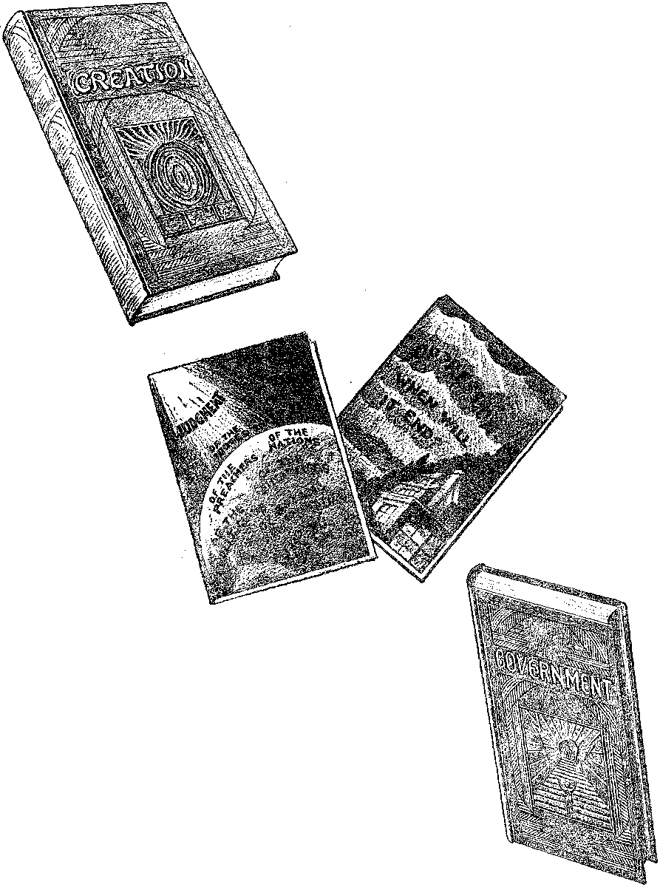

A JOURNAL OF FACT HOPE AND. COURAGE
in this issue
ALL NATIONS ONE BLOOD
RADIO RECEIVER DESIGN
AGE OF THE SUN
FOODS AND ACIDITY
ALUM AND BAKING POWDER
EVENTS' IN CANADA
HIS RESURRECTION
fifth of a series of radio lectures on good government, by Judge Rutherford
omnimmmmmmmmmmmmimmEmmmmiimm
EVERY OTHER WEDNESDAY
5c a copy - $1,00 a year - Canada & Foreign $ 1.50
Volume X - No, 255
June 26, 19 2 9
Contents
........................................— ~------------------
Social and Educational Language or the Underworld .............. 620
Finance—Commerce—Transportation A. Ifuw Notes ox Money .
Political—Domestic and Foreign "A. Paxabtjs on Disarmament"............ .
Agriculture and Husbandry Hardships of New England 1'abmk.is
This Call oe the Wheat Fields .....
Science and Invention
*‘0f One Blood Alt. Nations of Men"
Some Items It eg adding Modern Kaiho Keceiveb Designs .... (517
A Hint as to the Age of the Sun .......
Home and Health
Foots That Produce Acids ob Ai.kai.ies in the Body ..... (521
Too Many Hau-baked Surgeons .....
Is "Sodium Aluminum Sulphate" Alum? ......... 626
Too Much for Even a Steel-lined Stomach ......... 629
Travel and Miscellany
. Religion and Pmi.osori-iY
The Children’s Own Radio Story
Published every other Wednesday at 117 Adams Street, Brooklyn, N. Y., II. S. A., by WOODWORTH, KNORR & MARTIN
Copartners and Proprietors Address: 117 Adams Street, Brooklyn, N. L., TJ. 8. A. CLAYTON J. WOODWORTH.. Editor ROBERT J. MARTIN .. Business Manager NATHAN H. KNORR.. Secretary and Treasurer
I<’ivb Cents a Copy—$1.00 A Year Make Remittances to THE GOLDEN AGE Notice to Subscribers: We do not, as a rule, send an acknowledgment of a renewal or a new subscription. A renewal blank (carrying notice of expiration) is sent with the journal one month before the subscription expires. Change of address, when requested, may be expected to appear on address label within one month.
Foreign Offices
British ............. 34 Craven Terrace, Ixmdon, W. 2, England Canadian ...........40 Irwin Avenue, Toronto 5, Ontario, Canada
Australasian . . .7 Beresford lid., Strathlield, Sydney, N. S. W., Australia South Africa............6 Lelie Street, Cape Town, South Africa
Entered as second-class matter at Brooklyn, N. Y., under the Act of March 3, 1879.
Volume X Brooklyn, N. Y., Wednesday, June 26, 1929 Number 255
“Of One Blood All Nations of Men
IN THE Sunday supplement of an American paper there has appeared an article of more than casual interest to students of the Bible. This article deals with the origin of the various races. Although we find in this article expressions of scientific theories concerning the evolutionary process which the race has undergone (according to their theory), we find also, after gleaning the facts from foolishness, that these same facts are in close harmony with the Scriptures. Scientists have discovered that the secret of racial differences lies in the activities of the various glands. That is to say, the over-activity or the under-activity of a certain gland will produce certain results, such as giants or pigmies, the angular chin or the receding chin, the coarse hair or the fine hair.
The scientists believe that these changes were brought about gradually over a period of many generations. At the same time, they cite instances where diseased glands produced these changes radically. For example, we read: “There is even a possible effect on the skin; for in one disease of the adrenal glands the skin turns dark bronze in color.”
The following is a quotation from the article: For several years scientific men have been sure that the glands have power to alter individual human bodies as profoundly as the differences between members of different races. What was less certain was that these individual differences could be passed on from one generation to the next, for races can be created, of course, only if heredity comes into play as well as the gland influences; only if changes created by the glands are permanent and transmissible to the children.
This point has at last been cleared up by important researches by Dr. Oscar Riddle, of the Carnegie Institution of Washington, who has demonstrated that differences in the behavior and size of at least two glands are definitely inheritable. Dr. Riddle has even bred two distinct types of doves, the animals with which most of his work has been done. One type—it
By Kenneth Ralph Coulter
would be perfectly possible to call it a “race” of doves—has large thyroid glands; the other type has small glands. Thus Dr. Riddle proves the possible existence of at least these two “gland races.” The power of these glands to alter other bodily characteristics, in human beings no less than in doves, is something about which science already had no doubt.
Few human problems have caused more fruitless speculation for thousands of years than the problem of the origin of races. In olden times men used to believe that all the races had been separately created, a belief which finds one form in the idea that the different races sprang from Ham, Shem and other Biblical characters. Nowadays no scientific man holds this idea seriously. All human races are believed to have been developed, by ordinary processes of evolution, out of some single primitive human race.
Although these paragraphs and more which will follow openly deny the Scriptures, the Scriptures, on the other hand, fully approve of the principles involved and prove beyond a doubt that this actually is the reason for the differences in races. The Scriptures prove, however, that the change instituted in the glands was not an evolutionary change but a severe, radical change. Scientists, on the other hand, favor the theory of evolution, which you will readily determine by reading the following:
Diseases exist in which this adrenal gland is disordered, precisely as they do for disorders of the pituitary gland. If the adrenal gland is too active hair tends to appear on the body, and this hair is apt to be black and coarse. On the other hand, when the adrenal glands are not active enough the normal hair tends to get thin and silky. In extreme instances it falls out. There is even a possible effect on the skin, for in one disease of the adrenal glands the skin turns dark bronze in color. No one imagines, of course, that these changes in hair or skin or bones or other similar racial characteristics caused by gland diseases are precisely of the same nature as the supposed changes that produce races. These diseased conditions are extreme examples. [The Bible clearly proves that these glands did become subject to severe conditions which without
an atom of doubt would produce disease.] They are apt to be accompanied by other changes on mind and body which mark them as clearly abnormal. What the evolutionist looks to for the causes of racial differ-' ences are much smaller changes in the sizes or activities of the different glands; changes totally imperceptible in a single generation but which are probably effective, and not harmful over a period of many centuries.
The next quotation clearly proves that food and the utili ation of food are materially affected by the glands:
Still another gland, the thyroid gland in the neck, has recently been related to a difference definitely known to be of racial character. This is the difference in the production of heat in the body, as measured by what is called the “basal metabolism”, which means, in simple terms, the rate at which food is burned in the body to produce bodily heat.
One of the most interesting facts developed by modern scientific investigations of this matter is that members of the yellow races, like Chinese and Japanese, have an average basal metabolism notably lower than that of white races. It is well known too that the thyroid gland controls this basal metabolism. When the activity of that gland is above the average the person concerned has a high heat production and a high basal metabolism. On the other hand, if the thyroid gland is less active than usual, the heat production and the basal metabolism are low. That may be why Chinese men and women are apt to feel the cold more than whites do. It is perhaps one reason, also, for other differences between the two races. Once more the racial differences seem to point clearly to the gland systems as the fundamental cause.
The influence of climate and food is freely confessed as revealed in the following:
Dr. Riddle's investigations with the doves have proved, however, that precisely this same fixity of inheritance exists among the glands. However these gland differences may be caused—and here is where the influences of food or climate may be of real importance—the differences certainly persist by heredity from one generation to the next, just as do the differences between races.
These are the physical facts coupled with false speculations and theories as set forth in the article. It is both gratifying and amusing to note how the Scriptures fully approve of and silently testify to the facts set forth.
Beginning with the first quotation we find that the Scriptural account concerning the three sons of Noah and their propagation of the races is disputed by the men of science, yet they blandly confess the ■■three races of mankind” and casually publish a diagram setting forth pictorially "'the striking characteristic difference of the noses, nostrils and lips of three races of mankind”.
Aside from evolution, the scientists publish three causes for the changes in glandular activity, namely: (1) disease; (2) climate; (3) food.
The Bible silently testifies to these three causes:
(1) Sudden change from the humid warmth of the Edenic world to the severe climate of the post-Edenic world would greatly affect the health of persons accustomed and acclimated to the Edenic world, breaking down all resistance at a single stroke. ’
(2) After the deluge the climate became varied over the face of the earth, as well as each locality suffering alternate changes.
(3) Meat (flesh of animals) was eaten for the first time after the deluge.
Let us first discuss the diseased gland. Science has definitely established that the mother’s relationship to the child in her womb is purely chemical. The mother provides the heat. This reminds us of the fifty-first Psalm: “Behold, I was shapen in iniquity, and in sin did my mother conceive [margin, icarm] me.” While the child is in the womb, heat which is supplied from without the mother's body plays an important role.
A certain poultryman discovered that by using flie violet-ray and increasing the intensity of heat he could secure a greater number of pullets. This was given as a probable reason that women living in warm climates gave birth to a greater number of girls whereas women living in cold climates gave birth to a greater number of boys.
Now while the child is in the womb, the glands must be very sensitive and flexible; indeed, could they not be compared to sensitized film plates? The child undoubtedly reacts to every passing mood of the mother, which moods are in. turn regulated by the conditions of the mother’s glands. After the child is delivered of the womb the glands remain perhaps in a semiflexible state, during which time any outside influence bears grave impression upon the child’s nature, or actually upon his glands. Not until the child reaches the adolescent stage do these glands attain any fixity; which means also that the child’s nature, temperament or “character” has become fixed. While the child is in the womb is the first stage of the glands, and here heredity is at work; after the child is born the glands are still subject to outside influences, and here environment is at work; after the adolescent stage the glands become fixed in their activity and here the “'character” hardens into a mould. This gives us three stages: (1) child in womb; (2) from birth to adolescence; (3) from adolescence onward.
In the case of the glandular activity of Noah’s children and their children, there is a definite analogy:
(1) Child in womb
(2) From birth to adolescence
(3) From adolescence onward
(1) Ham, Shem and Japheth in Edenic world
(2) From deluge to heredity fixes racial traits
(3) From time heredity fixes racial differences even until now
Inasmuch as external heat helps to determine whether the child shall be male or female, is it not reasonable that the humid warmth of the Edenic world would likewise tend to keep the glands of men from Adam to Noah in a state similar to that during which the child is in the womb? That is to say, would not the glands during those years be maintained in a sensitized, flexible state, sensitive to any change or variation, yet (because of Edenic climate) not subject to any change? Thus Noah and his children coming from an Edenic world to a post-Edenic world is similar to a child issuing from the sanctuary of the womb to the mercies of environment. At this time the sensitive glands, which had been accustomed to the humid warmth of Eden, were subject to icy winds, glacial waters, glacial snows, glacial ice, cold dampness followed by the direct rays of the sun, with alternating winds of burning heat and freezing chilliness, drought and rainy seasons. To all of these the sons of Noah and their immediate children (who would have inherited sensitive glands) were not acclimated and adapted, the change having come so radically. These glands, instead of undergoing a gradual change would have become severely weakened, and in turn diseased, so that great changes would have been brought about within a single generation, which changes (because of intensive intermarriage) were sealed by heredity. At this time the glands had become acclimated to the change; just as the child during the adolescent stage hardens into a definite mould of “character”. All this is fully in accord with the Bible, which tells us that man is degenerate. Thus, these abnormal racial differences are the product of disease. (There’s a bone for the evolutionist to chew on!)
The White or Caucasian
These diseased glands were aggravated by:
(1) A variation of climate, leading to (a) a dispersion of tribes and their geographical segregation, and (b) intermarriage.
(2) Variation of food.
Considering now the relationship between food and the glands, we find that the thyroid gland in the neck determines the rate of burning up of the food taken into the body. Whether the selection of food produced this state of the gland or whether this state of the gland influenced the selection of food, the article does not state. The Scriptures seem to favor the former. After the deluge, man ate animal flesh for the first time, or rather he was given permission to eat it by Jehovah God. Perhaps one of Noah’s sons loved animals greatly and could not eat the flesh of his pets. We could assume that this son must have greatly resembled his father, Noah, that he was a patient, ceaseless, faithful worker, and that he is the father of the Asiatic peoples who are famous for their patient drudgery. Now this son of Noah loved animals, and this love for animals was doubtless transmitted to his children. In addition to this, this son would become a patriarch and would advise his children not to eat the flesh of animals. In due time this would become a systematic and superstitious veneration for animals, which would in the course of time develop into animal worship. This undoubtedly accounts for the reason why Asiatic peoples live on rice and fruits, worship animals, and have a lower rate of heat production in their bodies; and finally it accounts for their patience in their work even though it be drudgery.
While man was in the Eden world, a high heat production in the body was not necessary. With the coming of the deluge, all this was changed. Man must supply himself with bodily heat to combat the variations of external heat. The assimilation of such a food as meat would produce greater energy and heat, which in turn would urge the thyroid gland on to greater activity, which soon became fixed by heredity. One of these sons and his tribe, however, did not eat meat; therefore this artificial heat was not supplied bodily, which in turn did not stimulate the thyroid gland, and it became (because of the change in temperature) more or less inactive. This in due time -would have been fixed by heredity. Being more sensitive to the external changes of temperature, this tribe would naturally seek a place congenial to their physical tendencies, such a place as Asia evidently offers. One of the other tribes lived on meat, thereby producing a greater bodily heat at a faster rate, and was, because of the natural heat within them, able to push into colder climates. These people, being meat-eaters, would naturally eat a great deal of oil, which in the light of presentday science is essential to bone growth, thus developing larger bones than their brethren who, in warmer climates subsisted on fruits and vegetables. These climates in turn worked upon the glands which in turn changed the physiognomy of the people.
The Bible clearly indicates that although the people prior to the destruction of the Tower of Babel were all of one lip, these people were segregated into tribes, which is really nationalism on a small scale. There must have been intensive intermarriage, which would tend toward emphasizing certain hereditary traits. Thus, if one of Noah's sons had but a tendency to have a. receding brow, through intensive intermarriage and in the course of a few generations this condition would be seriously in evidence; which is signal evidence, not of evolution, but of degeneration. After Babel this condition of intermarriage would be intensified still more, until in these days intermarriage between two distinct races is looked upon as criminal.
Hardships of New England Farmers
A NEW ENGLAND farmer sends us a clipping from his farm paper in which a Maine farmer says, in part:
We may not want to think that we are stripping our farms to support a government that is bringing oppression upon us. But facts are. stubborn things to face, and I actually know of farms in my township that are being stripped of growing timber in order to pay taxes and other bills that should come from the proceeds of their crops. What will happen when these assets are gone?
The New Hampshire farmer who sends the clipping to us backs this up by the complaint that the local corporations are forcing foreclosures of mortgages, meanwhile selling dried fruits at 30c a pound and sugar at 7|c. He says:
Surely it is the folly of the foolish when the farmer pays his last dollar for taxes, which seems to be the case with many" today. The situation is appalling.
Exorbitant taxes are bad enough, but when the farmer is confronted with the foolish rashness of the law which extorts excessive interest and charges for delinquent taxes, he is branded with a cruelty which, has no place in a democracy. Autocratic officials are at his heels, and with the power and authority the law forces upon them, the American farmer, ■whose ancestry built this great republic, is fast being driven from his farm, his home. County after county" through the northwest could tell a mournful story of the cruelty which farmers have been subjected to.
WITH the tremendous expansion of the Canadian National Railway lines northward, and the assurance that the Hudson’s Bay line, with its enormous possibilities, will be completed this year, the world’s greatest private-owned railroad is awakened to action in the same direction. Under the caption, “A Tremendous Programme,” the Saskatoon Star-Phoenix has the following editorial:
With all the zeal of the convert the Canadian Pacific Railway has apparently at last become “north-minded. ’ ’ For years and years that company has confined its activities to the southern and central parts of the three provinces. Driven originally to the latter course by circumstances which are sufficiently well known, it took the position that what was in the first place a political necessity, was in fact a matter of choice and that the northern areas were not worth bothering about. The last twelve months, however, have seen a tremendous change come over the spirit of the company’s dream. The directors in person took one look at the Peace River district and promptly offered $5,000,000 more for the Alberta government lines than they had offered previously. Following this, Consolidated Smelters, largely controlled by the Canadian Pacific Railway, optioned remote properties in northern Saskatchewan and now has come the official announcement of a programme of northern railway expansion, to an extent which would, one fancies, cause some of the early directors to turn in their graves.
Whatever else may be said about the programme, which, it is announced, is to be submitted to parliament, it certainly does not lack vision. There are at least three tremendous lines under consideration. One line is to run from Prince Albert, which city, by the way, seems to be playing a large part in the northern picture, as far as Lac La Biche on the Alberta and Croat Waterways line, recently sold to the two railways by the Alberta government. Another line is to go from Prince Albert to Foster Lakes, which are over 200 miles due north of that city, presumably the scene of the Consolidated Smelters option. The third major project is the line from Nipawin to Island Falls, the scene of the Flin Flon company’s power development on the Churchill River, and the assumption is that this road may ultimately be extended by way of Reindeer Lake to tap the Hudson Bay line, although officials state this is not immediately contemplated. Any one of these projects before the war would have bulked almost as largely in the public imagination as the construction of the National Transcontinental.
Substituting Crucifixes for Bibles
The following article appears in a recent issue of The Sentinel, under the heading, “Crucifix
Substituted for the Scriptures in Courts of Quebec”:
Quebec City.—In British courts perjury consists of taking a false oath and kissing the Bible. Now it is proposed to banish the Bible from the courts of Quebec and substitute the crucifix.
That exalts a “graven image” above the Scriptures, and according to the Ten Commandments constitutes idolatry.
It is said that that is the practice in Italy. But this is not Italy. But this is Canada, a part of the British Empire, and to introduce an Italian custom savoring of idolatry is repugnant to the British tradition.
We are told by the Quebec Chronicle-Telegraph that this innovation is aimed at “eliminating perjury.” It may be that it will have that effect with Roman Catholic 'witnesses. It is, therefore, a severe reflection upon the truthfulness of Freneh-Canadians. Here is the story, as told in the Quebec ChronicleTelegraph of a recent issue:
“Crucifixes will be installed in the various court rooms in the Court House if a proposal which will come before the House meets with the approval of the members. At present witnesses take the oath on the Testament, but the innovation would oblige them, if the court so wished, to take the oath before the figure of Christ. The custom exists in Italy and certain parts of France and is aimed at eliminating perjury before the courts. The proposal has the approval of Sir Francois Lemieux, judge in chief of the Superior Court.”
To show further the mighty grip of the Boman Catholic church over the province of Quebec, the same paper contains the following:
Quebec. Feb. 1.—Premier Taschereau has introduced a bill in the Legislature that shows how firmly the Church rides the Government of the Province. If it passes, as no doubt it will, no Protestant will be safe in buying real estate from a Roman Catholic. It is proposed to put church liens on the property of Roman Catholics, and not have them registered. So there will be no way of finding out whether any piece of real property is free from such encumbrance.
The bill is to amend what is known as the Parish and Fabrique Act, which empowers the Roman Catholic fabriques or vestry boards to carry out any church work considered necessary and to assess Roman Catholic properties in the parish by special tax. The -wording of article 69 is: “The amount of any assessment on any land to defray the expenses of the construction or repair of any church, sacristy, parsonage or cemetery shall be the first charge on such land, and the first privileged debt affecting and binding the said land, without its being necessary to register the act of assessment or the judgment of confirmation in any registry office. ’ ’
It is now proposed to add the following to this section :
“And such land shall remain subject to such assessment and affected by such privilege when it afterwards becomes the property of a corporation or of any person not professing the Roman Catholic religion. ’ ’
It will not be safe to take a mortgage on' the property of Roman Catholics, for the church may come along and place a lien on it after the mortgage is made, and the demands of the church override the rights of the mortgagee. It is an astounding piece of legislation that would be impossible in any but a thoroughly priest-ridden country.
In brief, the change will mean that, if a Protestant buys a Catholic’s property, on which the church virtually has a mortgage, the Protestant will have to discharge that mortgage just as he would an ordinary mortgage held, say, by a trust company.
The effect of the change is the principal basis of discussion here. General opinion is that Roman Catholics will be harder hit than the non-Catholies, and general opinion, too, is that the raison d’etre of the Premier’s move is the inclination of some Catholics to unload much of their property when church taxes are created through the action of vestry boards in incurring expenses either for church construction or repairs. Reduction in Catholic taxable properties, of course, embarrasses the parish authorities in their financing.
Real estate men foresee that Catholics will have to take low prices for their proper-ties if church liens are on them.. They say non-Catholics may be expected to offer only the market value of the property, minus the total of the church taxes capitalized.
During the year 1928 the fire losses in Canada reached the immense total of $301,267,500, which is roughly $150 for every household in the country. This is a tax on the wealth of the Dominion which yields no returns at all to those who pay it. The total loss is distributed over a great part of the citizen body by insurance, but insurance does not reduce by one penny the economic waste.
While the record for that year looks pretty bad, it was an improvement on the year previous, when fire losses totaled $320,595,600.
Farmers generally will be interested in the following item, which appeared in a recent issue of the Family Herald;
Among the new crops that are likely to find a place in southern Canada in the near future, the soy bean is prominent. It has been tried for a period of years at the Agricultural College, Guelph, with such satisfactory results that more extensive planting is recommended by the Field Husbandry experts.
The soy bean has a remarkable number of uses, chief of which are as forage, ensilage and nitrogenous fertilizer. As a food for man in Asiatic countries the soy bean ranks second only to rice, and for the white race it provides green beans for the table, or canning, dried beans for soups and baked beans, and a vegetable milk which provides casein, confections, milk powder, condensed milk and cheese. The oil extracted by expression or by the use of solvents is enormously in. demand for the manufacture of soap, paints and varnishes, linoleum, water-proof goods, robber substitutes and celluloid.
By scientific selection and propagation, a special variety has been developed, which is adapted to the climate of the southwestern peninsula of Ontario and similar climatic conditions elsewhere in Canada. It is stated that this variety, registered with the Canadian Seed Growers’ Association as O.A.C. No. 211, yields nearly eight tons of green crop to the acre, and nearly twenty-four bushels of seed, as compared with an average yield of fifteen bushels of seed in Manchuria, fifteen in the northern sections of the United States, thirty in North Carolina, and forty in the cotton belt, all of which points to a promising future for this crop.
Natural Resources (Ottawa) contains this interesting item:
The tree planting division of the forest service, department of the interior, reports that there are now about 55,000 flourishing plantations scattered over the Canadian prairies where in former times one could travel for miles without seeing a tree. Besides affording shelter for homesteads and crops and preventing soil-drifting, these plantations have made it possible to establish orchards, vegetable gardens, and plantings of bush fruits such as raspberries and currants, all of which were practically unknown on the prairies a few years ago.
Speaking upon reforestation The Daily Province states editorially:
There is scarcely any subject that is of more importance to Canada at the present time than that of reforestation. We have many square miles of forests
JraE 20'1929 The qOLDEN AQE 017
of pulpwood, for instance, but on a little reflection of the right kind of timber?” The answer of a Yan
as to the number of trees that go to the making of one of the big rolls of paper daily swallowed by the rapid presses, the necessity of preparing for the future is emphasized.
In a booklet issued by the Canadian Pulpwood Association, whose headquarters is at Halifax, Dr. Clifton D. Howe, dean of the Faculty of Forestry', University of Toronto, is quoted as saying that “Canada owns young forests of over fifty million acres, which, under rigid protection and wise administration, will supply Canada with adequate timber to cover’ future needs.” In the booklet in question Mr. Reuben B. Robertson asks; “How are we to obtain fast growth couver man practically acquainted with the logging industry both in Eastern and Western Canada is, in short, “Go to Germany.” And he goes on to say that this is not to be taken as being equivalent to the English saying “Go to Jericho,” but is essentially the thing we must do. He remarks that some years before the war Germany made systematic and meticulous enquiries in Oritaria as to how our schools were managed, and that if we did the same thing with regard to the way in which Germany protects her more limited forests, and further pursued our investigations in Norway and Sweden we should get side-lights on the subject that would be exceedingly valuable.
Some Items Regarding Modern Radio
RADIO in general with all other fields of endeavor is and has been undergoing great changes in development toward perfection. It was but a few years ago when a small crystal radio receiving set was considered all that was necessary to hear a radio program. From" the humble beginning of a cheap crystal set the average radio fan has gradually evolved to the single vacuum tube regenerative set, then to the regenerative detector plus audio amplifier set, and then finally, after emerging from other stages of development, he is today not satisfied unless he can own a complete outfit incorporating a radio frequency amplifier, detector, audio frequency amplifier, and power loudspeaker. Whereas the early one-tube outfits emitted a conglomeration of sounds into the ears of the listener wearing a bungles ome headset, today he sits quietly by an improved type of loudspeaker and enjoys the voluminous sounds issuing therefrom.
It is the purpose of this brief^article to survey the field of present tendencies in receiving set design, and, perchance, to forecast what the up-to-date radio set of the future possibly will be. In doing so I wish to emphasize the fact that the fundamental principles of radio reception are established and no great radical changes need to be expected soon. The general improvements will come along the line of refinement of various small details, the sum total of which will go to make up a radio set of superior quality. Radio receivers today are standardized and stabilized and are in much the same stage of development as the automobile. Therefore no Receiver Designs By Ralph II. Leffler one needs to hesitate to invest in a good radio set, thinking that in a year or so it will be obsolete and the money spent wasted. There is no more danger in that respect than in buying an auto. Of course improvements will come, not only in radio but in auto designs and in everything else w’Oith while. But why wait for perfection before enjoying the benefits of modern invention ?
An up-to-date receiving set can be considered one which is • operated entirely from the light socket and is, therefore, batteryless. It is selfcontained in every respect, from antenna to loudspeaker. Moreover, it has but one tuning control and can be operated by any one, from the youngest to the oldest in the family, and is practically fool-proof. The quality of sound output from the loudspeaker can be considered very good, especially so when making direct comparison with the sound output from the old type of horn speaker of but a few years ago.
The up-to-date radio set of the future will incorporate all the good features of present sets, but will include many more. Engineers and designers now working upon new models are talking about such contrivances as band pass selectors, flat radio frequency amplifiers, and single stage audio amplifiers. All the highest quality sets will use an improved type of loudspeaker, probably of the dynamic type; or perhaps some new principle of speaker operation will be discovered and that be used instead. Already there is a marked activity toward developing the electrostatic type of speaker, one which, inherently, should give excellent quality.
The trend in design for future sets is to separate the tuning or selecting portion of the set from the amplifying portions, instead of tuning ’and amplifying simultaneously as is now done in practically all sets. Further, in the amplifying portion of the set, the radio frequency amplifiers are being completely isolated from the audio frequency amplifiers and other portions of the receiver. Some designers are concentrating upon flat radio frequency amplification instead of the old type of separately tuned stages.
Let us see just what is meant by “band pass selectors” and “flat amplifiers”. As is well known, the broadcasting spectrum being used in the United States at the present time occupies a band of frequencies from 550 kilocycles to 1500 kilocycles. That is, all the broadcasting stations must operate upon some one carrier wave frequency assigned to it between those two limits. Take, for an example, a broadcast station such as WORD, which is at present oper-acting upon a carrier wave frequency of 1480 kilocycles. Now, in the present system of modulation used at all broadcasting stations, when this carrier of 1480 kilocycles is modulated the frequency radiated into space is no longer a single frequency of 1480 kilocycles, but, instead, a band of frequencies is radiated. The width of this band of frequencies depends upon the perfection of design of the audio amplifier equipment at the station associated with the modulator. In general, a good audio amplifier will amplify practically all frequencies an equal amount from 50 to 5000 cycles per second. When this band of audio frequencies from 50 to 5000 cycles per second is caused to modulate the carrier wave, the band width of the carrier wave becomes 1480 kilocycles minus 5000 to 1480 kilocycles plus 5000. That is, the total width is 10,000 with the carrier frequency at the center of the band. At the receiving set, in order to obtain the good quality of reception desired it is necessary to receive this entire band width without any discrimination between the frequencies within that band width. The purpose of the new band pass selectors which radio fans will be hearing about shortly is solely for that purpose, and thus to improve the quality of reception and at the same time markedly increase the selectivity.
The band pass selector is a complicated arrangement of inductors, variable condensers, and resistors, so connected in circuit that the frequency response is a wide band of frequencies, instead of a narrow band as in the old method of tuning. Also, this same arrangement used in the band pass selector produces a far more marked degree of discrimination against the interfering station. Stated differently, the receiver is more selective. Technically, this is stated that the resonance curve has a flat top and steep slopes. The flat top of the resonance curve permits the reception of a wide band of frequencies, taking in the low as well as the high of the audio spectrum, while the steep slope of the curve introduces a sharp discrimination between stations operating upon adjacent wave channels.
The “flat” radio frequency amplifier is an amplifier so designed that it will amplify practically all the carrier wave frequencies in the broadcast spectrum an equal amount. It has no tuning devices associated with the various stages of amplification, and, therefore, can not discriminate between the various stations. Such an amplifier by itself would be useless. Should an antenna be directly connected to such a “flat” amplifier and then detected, the resultant sound output would be a conglomerate mixture of all the broadcasting stations on the air at the same time; that is, it would be entirely minus any selectivity. However, as soon as a band pass selector is connected between the antenna and the amplifier, the situation becomes entirely different, the various broadcast stations on the air at the time are nicely separated into their respective channels, and order reigns once more.
The flat audio amplifier is merely one which is so designed that it will amplify all the important frequencies of the audio spectrum from the lowest to the highest. It is understood that while both the aforementioned flat amplifiers are designed to amplify a wide band of frequencies an equal amount, the one type has to do with radio frequencies only, while the other has to do with audio frequencies only. Both types must be used in the same receiving set at the same time. The radio frequencies are those far above audibility, while the audio frequencies are those within the range of hearing.
The modern receiving set, as well as those of the future, is designed to operate efficiently over the entire broadcast band from 200 meters to 550 meters. There are many receiving sets of the older types in use at the present time that can not tune down to some of the broadcast stations operating on the lower wave lengths. Also, these older types of sets do not possess the selectivity nor the quality of amplification as do the more modern sets. It is not practicable nor advisable for the average radio fan, even though he is somewhat acquainted with the fundamental principles involved, to attempt to modify his set to incorporate some of the late improvements. The proper design of receiving sets is a task requiring scientific and engineering skill together with a mass of measuring instruments found in well-equipped laboratories only. For the owner of a receiving set to try to make the modifications himself, unless he is experienced, would simply spell failure. However, to modify an old type of set so as to be able to tune down to stations operating near 200 meters is not such a difficult undertaking but that a radiotrician can perform it with success. This modification simply involves the removal of a few turns of wire from the radio tuning inductance, the number of turns to be removed being governed of course by the range and type of set in question.
It is strongly advised that many of our readers who are unable to hear some of the good stations operating upon the lower wave lengths because their receiving sets will not tune down that low, have their receivers modified by a competent radiotrician. The cost of such a modification on the average type of old set should not be prohibitive.
The radio set of the future will probably be one which will be entirely invisible so far as the listener is concerned. That is, it will be housed in a cheap box and placed in some out-of-the-way corner in the basement or closet. The tuning and complete controlling of the set will be performed from a small portable box, which can, if necessary, be used in any room in the house. The loudspeaker, too, possibly, will be entirely invisible, and the sweet strains from some Stradivarius will be made to issue forth from any room desired. Already the automatic receiver is here and growing steadily in popularity. When television has been developed to a practical stage, then, undoubtedly, the radio receiving set will be combined with the television apparatus in such a way that it will be possible not only to hear some celebrities at a distant point, but to see them as w’ell.
Wonderful, indeed, are the visions of the New Day which is now dawning!
The Call of the Wheat.Fields By Wesley Ray
(A glimpse at one of the country’s biggest industries, where a great army of workers are employed.)
IN JULY the wheat harvest of the nation is in full swing. Unaided and alone, the farmers and permanent laborers could harvest but a fraction of the annual crop. This means that tens of thousands of laborers must be marshaled and assembled at the right place at the proper time. Otherwise, disaster and bankruptcy would face the wheat farmers, followed by starvation on the part of the consumers.
People living in towns and cities can not grasp the magnitude of the farmers’ task in feeding them.
How many furrows are turned, how many swaths of grain are harvested, how many'bundles are bound and shocked! How the threshingmachines hum for long, weary hours each day, all that the world may have its daily bread for which it prays! These are facts about which the average person knows but little.
A wonderful story, full of romance, lies back of the annual wheat harvest. In July, for instance, the great army of the western wheatfields, battling to garner the golden grain, outnumber by far the entire peace-time strength of the U. S. army. But instead of being an army of destruction and desolation, this is an army of peace and prosperity!
Wheat farming in the Middle West, the North and the Northwest is a race between frost and frost. As soon as the thaw starts in the spring, men begin to flock to the wheat country. They come from the prairie towns. They come east and west from the lumber camps and sawmills. Some are homesteaders, men with little places of their own too small to support them all winter. Others are “hired” men wffio go back like the robins.
At every prairie station you can see them, dressed either in the canvass and fleeced coats of the plains or in the mackinaws of the woods, tumbling off the trains. Good fellows they are, lean, clean-shaven, humorous and game for anything. They toss their duffle into buckboards, cutters, sleighs or bob-sleds and are lost in the immense stretches that they are to aid presently in clothing with crops and will later strip bare as they found them. This is the first army that goes out.
The second army has answered the call, and this second army is none different except there are raw youngsters from eastern towns and cities out to earn bumper wages, men out of work, peasants from Europe, men who have been defeated in life’s struggle, others who are at the threshold looking into the future for the satisfaction of their desires. Then there are the young men, eager for adventure, eager to earn money with which to pay their way through college.
All of these are crowded into clamorous excursion trains. The prairie towns contribute a few loafers whom necessity has driven to work; and there is a liberal sprinkling of the genus “hobo”, anxious to pick up enough money to clear out and beat it down into Florida or California before winter sets in!
Every hand is needed, and there are few questions asked. Saints, criminals, tramps, college professors, students, Swedes, Norwegians, Danes—all classes are now toiling beneath a torrid sun in the wheat fields. Who they are matters not with the landlord. His only thought is to get his grain on the market. As long as they can stand the trying ordeal they are sitting “purty”.
But for the myriads of migrant laborers who have but precious little of this world’s goods, the wheat would decay on the stalk. What these men do between harvests no one seems to know and nobody cares. Where they live, how they obtain food and shelter, what comforts and contentments are theirs—no one is concerned, not even our government!
The call goes out only when their arms and backs are needed. From Kansas, Nebraska, the Dakotas, Manitoba, Minnesota, Oregon and Washington comes the harvest call, which is answered by a motley throng from the four points of the compass. They arrive on brake-beams, flivver hobos, gentlemen—a wide and strange assortment of male humanity appears in the ranks of the harvest army. These men are the leading characters in our annual wheat drama.
Language of the Underworld
THE London Daily Express, under a Chicago date-line, gives a., report of a gunman’s funeral in that city, as it appeared in a local paper, and then it is good enough also to provide a translation without which it would be as unintelligible in this country as in Britain.
Eddie “Stormy” Whitehouse, gunman leader of the East Side liquor gang, was buried this afternoon in a silver and aluminum casket that cost seven grand.
He was the twenty-sixth mobster to get it put on him for keeps within the last six months. “Stormy” went out with his heat in his hands, fogging away. His heat jammed, and “Ribs” Cartwright, fast Tommy man of the Lefty Brown gang, sprinkled him.
More than fifty thousand persons turned out to the funeral. “Stormy’s” flat, on East Division Street, in the “Blackbelt,” was filled with half a dozen bigtime mouthpieces, a judge, three ex-judges, a high police official, and a dozen' millionaire bootleggers. A bunch of cheap chislers, soft-song and stickup men, and booze hijackers, horned in for the free drinks. An orchestra was hidden behind a screen of flowers. A crowd of wise-dolls, most of them well-stewed, wept on the shoulders of their good guns.
“Grand”—$1,000 or 200 guineas.
‘ ‘ Put on him for keeps ’ ’—Killed.
“Went out with his heat in his hands”—Slain while armed with automatic revolvers.
“Fogging away”—Shooting to kill.
“Tommy man”—Expert in the use of a Thompson machine gun.
“Sprinkled him”—Filled with machine-gun bullets.
‘ ‘ Mouthpieces ’ ’—Criminal lawyers.
“Chislers”—Users of old-fashioned drills on safes.
‘ ‘ Soft-song men ’ ’—Confidence men.
“Hijackers”—Bandits who waylay loads of bootleg liquor, kill the driver, and steal the contraband.
“Horned-in”—Not invited.
“Wise-dolls”—Girls of the Chicago underworld.
“Good guns”—Their gunmen accomplices.
Foods that Produce Acids or Alkalies in the Body By A. C. Ward, M.D.
(Selected from lists prepared by Sherman and Gettler)
INCE an increase in the acidity of the body many diseases, this table of foods that increase 1 is recognized as a factor in the causation of or decrease body acidity will be found of value,.
ACID-PKODUCING FOODS ALKALI-PBODUCING FOODS
Bread Corn Cranberries Egg whites Fish, haddock Meat, beef, lean. Meat, frog Meat, rabbit Oysters Peanuts Rice
Bread, whole wheat Crackers
Eggs
Egg yolk
Fish, pike
Meat, chicken
Meat, pork, lean
Meat, veal
Oatmeal
Prunes
Almonds Asparagus Beans, dried Beets
Carrots
Celery
Currants, dried Lettuce Muskmelon Peaches Potatoes Raisins
Apples
Bananas
Beans, lima, dried
Cabbage Cauliflower .
Chestnuts ’
Lemons
Milk, cow’s
Oranges
Pears, dried
Radishes
Turnips
Too Many Half-baked Surgeons
THE Western Medical Times, of Denver, goes after a subject that most of us would not dare to say anything about when it delivers itself editorially of the following remarks:
We who have had to deal with vital statistics, mortality tables in particular, know whereof we speak when we say that too many of our graduates of today are entering specialties too young and before acquiring that thing called judgment. They have many deaths because of the lack of this attribute. Particularly is this true of the young surgeon who has entered surgery without any actual general practice. But because of the high cost of medical education the young man of today cannot spend many years trying to work up a general practice, which, as a rule, does not afford great profits. He must get into work that pays, and for some unknown reason specialties pay better than general practice; so, without having the advantages that accrue from general work and which makes the finished physician in the ultimate end, they become dollar hunters rather than doctors. Humanity suffers and dies because of this, and those who would improve conditions through their higher requirements sit by and wonder why.
“A Parable on Disarmament” From Social Friends
JN A public address recently, Winston Churchill, England's “Roosevelt”, told the following parable:
“Once upon a time,” he said, “all the animals in the Zoo decided they would disarm, and they arranged to hold a conference to decide the matter. The rhinoceros said that the use of teeth in war was barbarous and horrible, and ought strictly to be prohibited by general consent. Horns, which were mainly defensive weapons, would, of course, have to be allowed. The buffalo, stag and porcupine, and even the little hedgehog, said they would vote with the rhino; but the lion and the tiger took a different view. They defended teeth, and even claws, which they described as honorable weapons of immemorial antiquity.
“The leopard, puma, and the whole tribe of small cats all supported the lion and the tiger. [Laughter] Then the bear spoke. He proposed that both teeth and horns should be banned and never used again for fighting by any animal. It would be quite enough if animals were allowed to give each other a good hug when they quarreled. No one could object to that. [Laughter] It is so fraternal and would be a great step toward peace. [Laughter]
“However, all the other animals were offended with the bear, and they fell into a perfect panic. [Laughter] The discussion got so hot and angry, and all those animals began thinking so much about horns and teeth and hugging when they argued about the peaceful intentions that brought them together that they began to look at one another in a very nasty way. [Laughter] Luckily the keepers were able to calm them down and persuade them to go back quietly to their cages, and they began to feel quite friendly with one another again.”
Bible Questions and Answers
UESTION: Please explain the various scriptures which seem to contradict the testimony of our Lord that “No man hath seen God at any time”.
Answer: We may be sure that our Lord told the exact truth, and that every statement seemingly in conflict with it is susceptible of an explanation which will appeal to the child of God, even though in the age of unbelief in which we live it may be less satisfactory to those whose hearts are still hardened.
Not only did Jesus himself say that “No man hath seen God at any time”, (John 1:18) but Paul also said of God that He is the One “whom no man hath seen nor can see” (1 Tim. 6:16), and God himself said to Moses, “Thou canst not see my face: for there shall no man see me, and live.” (Ex. 33: 20) This testimony is all that we need on the one side of this question. The only problem is to straighten out the passages which the critics of the Bible either do not understand or do not wish to understand: often the latter.
The first instance cited against the above scriptures is that in Genesis 32: 30 “Jacob called the name of the place Peniel: for I have seen God face to face, and my life is preserved”. The explanation is that Jacob wrestled with an angel, commissioned by God to speak in TIis name. The angel refused to give his own name, desiring that the praise should be given to God. For self-evident proof that this was an angel of God that wrestled with Jacob, and not God himself, sec verses 1, 24, 28 and 29 of this same chapter.
The second instance cited is in Exodus 3:6, at the burning bush, where one said to Moses, “I am the God of thy father, the God of Abraham, the God of Isaac, and the God of Jacob. And Moses hid his face: for he was afraid to look upon God.” If the critics would only take the trouble to even read the book they are trying' to criticize, let alone study it, they would find that only four verses previous it states in so many words that the one who said this was an angel, a messenger of God, and certainly therefore not God himself, even though fully authorized to speak in His name.
The third instance is in the same book, Exodus 24: 9-11, “Then went up Moses, and Aaron, Nadab and Abihu, and seventy of the elders of Israel: and they saw the God of Israel: and there was under his feet as it were a paved work of a sapphire stone, and as it were the body of heaven in his clearness. And upon the nobles of the children of Israel he laid not his hand: also they saw God and did eat and drink.” This is to be understood as the second instance. It was the same angel, evidently our Lord Jesus in his prehuman estate, the Logos, playing the same great part.
The fourth instance is in Exodus 33:<11, “And the Lord spake unto Moses face to face, as a man speaketh unto his friend.” Again we have to find fault with the critics of the Bible that in their haste they do not even give these passages a decent reading. All they would have to do is to read the account and find (in the thirteenth and eighteenth verses of this same chapter) Moses pleading that he might see the face of the one with whom he had conversed so freely, and find (in the twentieth verse) the answer, “Thou canst not see my face: for there shall no man see me, and live.”
A man might be face to face with a spirit being': the man’s face would be perfectly visible to the spirit being, but the man with his feebler powers of vision would not be able to behold the face of the other. That this is the true explanation is seen in Elisha’s prayer for his servant, that his eyes might be opened so that he could, miraculously, see the heavenly defenders about them on all sides. The more the Bible is criticized, the brighter it shines.
That angels have many times been authorized to bear Jehovah’s name and to act for him is shown by the following scriptures: Gen. 16: 7-13; 19:15, 16, 21, 22, 24, 25; 31:11, 13; 32: 28, 30; Ex. 3: 2, 4, 6; 4:15; 12: 51; 23: 20-22; Num. 20:16; Judg. 2:1-4; 6:12-24; 13:3-22; Isa. 63:9; Hos. 12:4, 5; Zech. 3:1, 2; Luke 2:9; Acts 7: 30-35, 38, 53; Gal. 3:19; Heb. 2:2.
Is “Sodium Aluminum Sulphate” Alum? By Dr. Chas, T. Betts ' An Opinion
TV/TUCH stress has recently been placed upon •*-'-1. t,he above question by the manufacturers of various baking powders. Makers of tartrate baking powders claim that sodium aluminum sulphate is common alum. Manufacturers of alum baking powders claim that such products are not made of alum but from a substance called sodium aluminum sulphate. Alum is claimed to be a corrosive poison by many scientific authorities throughout the world; so a very important question is here raised, because sodium aluminum sulphate is extensively used in the manufacture of alum baking powders. And so, if sodium aluminum sulphate is alum and alum is a recognized corrosive poison, it is the writer’s opinion that some changes should be promptly made in the wording of our pure food laws, in order that the health of the nation may be safeguarded.
The above question was brought before our Federal Trade Commission in a recent case and the federal examiner for this particular case heard quite a number of prominent scientists who gave testimony. After a complete hearing, which extended over a number of years, he came to the following conclusion regarding the above question, which apparently was the crux of the whole case. The examiner’s report is as follows:
The question, “Is ‘sodium aluminum sulphate’ alum?” by the overwhelming preponderance of the evidence must be answered in the affirmative. I therefore find that:
Sodium aluminum sulphate is “alum” and is commonly so called. To use the term “alum” without qualification to mean SAS (sodium aluminum sulphate) in connection with baking powder is not misleading. To say that it is not alum may be misleading.
Many scientists have made statements or expressed opinions that sodium aluminum sulphate, or alum, is a powerful poison. It is sufficiently so to cause death if taken by mouth. It has been stated in this case by Dr. Harry Gideon Wells, pathologist of the University of Chicago, that there are cases of record in the literature of death following the taking of one ounce or approximately 30 grams of the drug. It may be of interest to the reader to know what is the opinion of one of the nation’s most prominent medical authorities regarding alum as a poison to the human anatomy. The following was given
under oath before the Federal Trade Commission’s Examiner, Edward M. Averill, by Dr. Victor Vaughan, for thirty years dean of the Medical Department of the University of Michigan :
A poison is a substance of a definite chemical composition, which by virtue of its constitution is capable, when brought in contact, with the tissues of the body, of modifying the cellular activity of one or more organs to such an extent as to impair health and possibly to destroy life.
Practically, alum is the only salt of aluminum from which poisonous effects arc likely to result. This is true merely because alum is the only soluble salt of aluminum that is widely used. All salts of aluminum are poisonous when injected subcutaneously or intravenously.
The researches of Siem, confirmed by those of Doel-ken, have demonstrated that the lesions induced by the subcutaneous administration of salts of aluminum are extensive and serious. In animals they found the lesions of “metallic kidney” and fatty changes in the anterior horns of the spinal cord. . . .
Many poisons, especially those administered by the alimentary canal (and this is true of metallic poisons as well as of many others), are absorbed into the circulation. In fact, they must be absorbed before they can act as systemic poisons. Perfectly insoluble substances, of course, would not be absorbed. Even metallic arsenic is not a poison until it is converted into the oxide. Metallic copper is not a poison unless it is finely divided, in which case it may be digested with the gastric juice. , . .
The point I want to make is this, that if you could prove that every particle, iota, of this substance (alum), administered by mouth, is eliminated by the feces, through the feces, or with the feces, it would not show that it had not poisoned the animal. A man may die from arsenical poison, and after his death no arsenic be found in his body. The poisoning is accomplished while this substance is traveling around. Then the tendency of the blood is to eliminate, in part at least, all poisons, into the alimentary canal; that is the way of getting rid of it; and the same thing is true of typhoid bacilli, and of various other poisons.
Development of Use of Aluminum Compounds
Some fifty years ago manufacturers, in their efforts to find a cheap substitute for cream of tartar, began to use burnt alum in baking powders. On account of their comparative cheapness and since they were indistinguishable in appearance from cream of tartar baking powders, the 023
alum mixtures were sold in considerable quantities.
THE TEACHERS OF THE PEOPLE
Shortly after their introduction, the makers of cream of tartar baking powders began to publish advertisements warning the public against the use of alum. Their statements were supported by the investigations that had been made in England on the adulteration of bread flour with alum, where it was used to conceal inferior grades of flour and to enable bakers to make a better-looking bread from low-grade flours than would otherwise be possible. Within a few years physiological experiments were undertaken by the most eminent scientists available at that time which confirmed prevailing opinions as to the injurious character of the aluminum compounds introduced into food through the use of baking powders containing alum. The makers of cream of tartar baking powders continued to publish the results of such experiments and opinions based upon them.
About 1892, when soda alum (or sodium aluminum sulphate,- its scientific name, by which many alum-using manufacturers prefer to call it) superseded the burnt ammonia and potash alums, manufacturers made no public announcement of that substitution, and since then soda alum, so far as is known, has been the only aluminum compound used in baking powders.
Although their sale has long been prohibited in France, England, Belgium, Germany, Switzerland, Brazil, Czechoslovakia, Hungary and most other civilized countries, the manufacture of baking powders containing alum has rapidly increased in the United States. Before the enactment of the first pure food laws, chemical analysis was the method of determining whether or not alum was an ingredient in a baking powder. About 1900, laws were enacted in some states requiring the manufacturer to state on the label the kind of baking powder that was offered for sale, and shortly thereafter in certain states manufacturers were required to publish the ingredients of their baking powders.
THE GUIDES
Certain manufacturers of baking powders containing alum sought a means of concealing the presence of alum. They announced that they did not use alum but an entirely different chemical, which they chose to call by its scientific name, sodium aluminum sulphate. To meet this, Wisconsin and other states required the word “alum” to be used in the ingredient clause on the label when any compound of aluminum was a constituent of the baking powder. In the meantime the respondent baking powder company in the above-mentioned case continued to advertise, “Contains no alum, leaves no bitter taste.”
Objecting particularly to the implication ot these phrases, manufacturers of baking powders containing alum invoked the aid of the Federal Trade Commission, urging that the respondent baking powder company be prohibited from making any reference whatever to the presence or absence of alum in its own product or in the products of its competitors. Further inquiry into the potential dangers to health in the use of
CUE PEOPLE
baking powders containing alum was apparently not contemplated or expected. The manifest purpose of the proceeding against the respondent company was the suppression of the fact that sodium aluminum sulphate is alum.
After hearing more than 175 witnesses, covering a period of about six years’ time, and securing more than 4000 typewritten pages of testimony, taken at a tremendous cost to all parties concerned, the official report was filed with the Federal Trade Commission, and the case was dismissed. Apparently no decision was made by the federal body upon the examiner’s
findings in the case, and in the meantime we continue to eat the poison in alum baking powders at the rate of about 60,000 tons per annum. Communities can take action upon such matters. Health is a matter largely under local control. In such federal cases, where tremendous amounts of money are vitally concerned, it seems very difficult, for some reason the writer does not understand, to secure action for general public benefit.
The city of Westfield, Mass., solved the problem for its citizens. Other communities can do likewise, in order that their residents also may be protected. The following reprint quotation describes how the city chemist, Prof. Lewis B. Allyn, attempted to make it possible that foods prepared for public sale in Westfield should be free from all such objectionable poisons, with which the public in general is being so well supplied.
WHY WESTFIELD OBJECTS TO ALUM IN FOOD PRODUCTS
[From the Hartford (Conn.) Tinies, February 25,'1015.]
The famous Westfield Standard was created by Prof. Lewis B. Allyn, town chemist and member of the board of health of Westfield, Mass. That, alum is not a fit ingredient of human food seems undebat-able. No less authority than Parke, Davis & Company, one of the largest drug firms in the country, in their manual of therapeutics have this to say concerning alum: “Powerful astringent (causes animal tissue to contract). Rarely used internally, except in painter’s colic.”
This substance finds its greatest use as a food adulterant in low-grade baking powders, pickles, condiments, etc. It is employed in cheap baking powders to furnish a low-cost acid to act on the baking soda, general use. Physicians may prescribe alum if they choose, but the food manufacturer has no right to dose both sick and well alike.
THE COMFORTERS OF THE PEOPLE
and in pickles and condiments to impart a false appearance of freshness and crispness.
Alum indisputably is of value in relieving painter’s colic, but it has no place in foods. for human consumption.
Strychnine, for instance, is a tonic in certain cases, but it is not for that reason to be recommended for
It should be understood that not all the alum put into a cheap baking powder goes into the system as alum. It splits with the soda into several compounds: Aluminum hydroxid, sodium sulphate, commonly known as “Glauber’s Salts”, potassium sulphate and carbon dioxid. This latter is the leavening gas.
“Stop your attacks on alum,” says the spokesman of the food adulterators. “You are threatening our great industry. ’ ’
Most manufacturers of food products who are using alum state the presence of this objectionable drug on the label. You will never find this statement in large type prominently displayed, but in small type on the back of the label; and the only reason it is here at all is because the government demands it.
The man who uses alum in a food product does not proudly boast of it in his advertising. The fact that alum is present is not a thing to boast of, and he knows it.
If alum is a chemical that should be added to food, why not be honest and say so in large type?
To quote one of the most efficient and conscientious of public health officials:
“Alum is recognized as and conceded to be a poison. ous substance capable of producing serious and even fatal results when taken into the system. Hence its use in foods for man has been expressly prohibited by many of the governments of Europe, including Great Britain, France, Germany, Italy, Belgium, Boumania and several of the Swiss cantons.”
Westfield objects to the use of alum in all food products, whether baking powder, pickles or condiments, for the following reasons:
“This poisonous, irritating, astringent drug is either directly injurious or may split up into objectionable compounds.
“No salt of aluminum is a food product in itself.
“'It is not a natural constituent of the human body.
“So far as is known, no public health official of standing endorses alum as a food ingredient.”
Westfield, the Pure Food Town, believes, in the presence of such a mass of direct evidence concerning the objectionable qualities of the drug, that alum-treated foods should be entirely avoided.
Alum belongs in the front rank of such objectionable chemicals as benzoate of soda, boric acid, salicylic acid, sulphuric acid and formaldehyde.
Book for the small type on the label.
Here is the food standard of the pure food town of Westfield, Mass.
More exacting than Government Food Standards or State Food Laws:
“Foods shall not contain added alum, copper, formaldehyde, sulphurous acid or its salts, boric acid or its salts, benzoic acid or its salts, formic acid or its salts, hydrofluoric acid or its salts, salicylic acid or its salts, nor any other noncondimental preservative.
“Foods shall not be colored with coal tar dyes, nor with poisonous vegetable colors, nor be contaminated with inert fillers, nor shall any substance be taken therefrom or added thereto so as to injuriously affect their quality, strength or purity.
“Foods shall be packed and sold under sanitary conditions and package goods shall bear no dishonest label nor labels bearing any extravagant or obscure statements.”
For protection to yourself and your family, see that you buy only foods and beverages that are certified under “The West field Standard.”
You will then be buying only products of high food value—wholesome and pure.
The above “Westfield Standard” may be considered quite drastic by the average layman; but when an examination into scientific works upon the subject is made, you will be surprised to find that it is possible for such poison to be sold in any community or placed in our shops for public sale. The usual plea is that the amounts are small and that they do little or no damage. The writer’s opinion is that small amounts of poison have cumulative effects upon the adult body, and immediate effects upon children, who do not have the physical power to throw off such ingested materials.
Following is Dr. H. A. McGuigan’s finding regarding alum, found in his scientific text books and quoted as his views. These views corroborate the opinions of many scientists, including Prof. Allyn’s opinion, as quoted above.
Aluminum is classed with the heavy metals which exert their action in the form of soluble salts in two ways:
(a) Local action, due to combinations with proteins which classify aluminum (1) with ferric chloride as styptic; (2) with the salts of lead, bismuth, zinc and mercury as astringent.
(b) General action, as absorption in which there is little difference in the metals. Local absorption exerting a constricting action on the local vessels.
When taken internally the action is due to chemical local action on the stomach and intestine, the acid liberated upon the union of metal and protein penetrating to the tissue with an astringent effect. The local reactions are loss of appetite, pain and discomfort, nausea, vomiting, purging, congestion, hemorrhages resulting from irritant and corrosive action. Ulcers may result from bacterial action on dead tissue.
There are many ways in which we are liable to ingest alum in our foods, even wuthout our knowledge. For instance: Aluminum dissolves in the hydroxid form from ordinary ahminum cooking utensils. When salt (chlorid of sodium) or ordinary cooking soda is used to season foods cooked therein, they join or become mixed with the hydroxid from the aluminum dish and form alum or various kinds of alum, according to the foods cooked. Meats contain alkalies; therefore, when meats are cooked in aluminum vessels alum is produced without the use of table salt or soda. For this reason it is the writer’s belief that aluminum should not be used for cooking purposes. About 3000 tons of alum are used in Toledo, Ohio, city drinking water per annum. Water “purifiers” which produce alum in the purified water are sold to the American public. Alum or aluminum compounds are also widely prescribed for the sick.
For many years there has been no doubt in the writer’s mind that alum is not a fit chemical to ingest in foods. After having the privilege of reviewing the testimony above referred to, he has no reason whatever to change his mind regarding it; in fact his opinions have been greatly strengthened thereby. It seems unusual that the facts pertaining to aluminum compound poisoning should remain a matter closed to the public. It has been more than two years since all the testimony or statements in Docket Case No. 540, Federal Trade Commission, Washington, D. C., have been reported to the federal authorities, by the official examiner, Edward M. Averill, yet no action has been taken by any authority to disseminate such information among our citizens, to my knowledge. In the name of humanity, how can this be? Is this a government of the people, by the people and for the people, or is it a government of the money, by the money and for the money?
A Hint as to the Age of the Sun
A GERMAN scientist, Professor AV. Nernst, is quoted as saying:
It is absolutely true that the sun and all other fixed stars developed from cosmic dust, which fact in the light of the results of the latest discoveries seems quite comprehensible. That is especially true regarding the life of the earth and the sun, in estimating which we were aided by certain radio-activities.
The age of the earth has been thus estimated at 1,600,000,000 to 1,800,000,000 years. The sun can not be much older. I should say that 2,500,000,000 years would explain its present condition.
We have means today to measure the temperature of fixed stars. For instance, the outward temperature of the sun will be about 6,000 Centigrade, while the inner heat of some of the larger fixed stars must be millions of degrees. Gigantic energies making themselves effective all through the universe emanate from radioactive elements unknown on our little globe that are in a deteriorating state and thus produce energy rays.
Some of these rays come from unimaginable distances and travel trillions of years before reaching the earth, but even then these rays are ‘ ‘ hard ’ ’ enough to pass through walls and houses. However, this deteriorating process alone can not explain the existence of the universe. There are also great constructive energies at work, else the universe would speed to its death. Radioactive destructive energies are counterbalanced by radioactive constructive energies.
Einstein has found a formula for these facts that alone would have sufficed to make that physicist immortal. According to his formula we must suppose that cosmic masses may without emitting any rays submerge in the ether of light, which is the mother of all energy, there to condense and become part of a new world system.
The above suggestion that the sun is about 2,500,000,000 years old is of singular interest in view of the Bible evidence that man’s real jubilee on the earth will begin when the earth has entered her 50,000th year of preparation to be his permanent habitation. The thought that the sun is 50,000 times as old is an interesting one.
In the Jewish jubilee types, at the beginning of the year, there were seven weeks of seven days each and then a fiftieth day of rejoicing, Pentecost. This was a part of a system by which every seventh year was a rest year, and every fiftieth year was a jubilee.
In the preparation of the earth to be the home of man there were six creative epochs of 7,000 years each. For 6,000 years we have been in the day of God’s rest. It is yet to continue for another 1,000, and then will come man’s jubilee, earth’s 50,000th year.
A Few Notes on Money By Fred Scruton (England)
IT IS very doubtful if money was ever in use before the flood. Although Tubal-cain was” an instructor of every artificer in brass, we have no record of anyone’s having made money. With the earth yielding comparatively abundantly, and with a very limited number of people on earth, there would be little or no commerce and hence no money.
We must indulge the assumption that Noah had no money; nevertheless he was the richest man on earth at that time, because he had an abundance of faith, and by that he built the ark. So it is also true of the immediate future that ‘‘riches profit not in the day of wrath; but righteousness delivereth from death”.
Whatever else the day of wrath may do, it certainly will reveal a weak spot somewhere in the function of money, the token of accumulated riches. Thus at that time the value and power of money will be lost.
It was evidently after the flood that money became a medium of exchange. Possibly it occurred after this fashion: A day came when A gave B certain fruits. In exchange B gave A money representing the value of the fruits. Then followed one of the greatest disasters in human history, when A obtained a further supply of money without producing more fruit.
How or when this took place is unrecorded in history; but it is highly probable that it occurred shortly after the flood, because there were men with unscrupulous and astute minds in those days. (See Gen. 10:8-12.) Moreover, the Devil was the invisible overlord of these same gentlemen. He would lose little time in making sure of their close cooperation by dangling before their astute gaze various glittering prizes. That is to say, the way in which A performed his first miracle by the aid of the unholy spirit would be revealed to the others, the stout progenitors of Big Business and their very able political and religious assistants.
In this way the world became divided into two parts, the A-ites and the B-ites. And so it is even unto this day. And so it is that money is not only a medium of exchange, but also a medium of many wonderful things distinctly advantageous to the A-ites, but, generally speaking, anything but fattening to the B-ites. Herein lies much of the world’s trouble.
Truly “the love of money is the root of all
628 evil”; for it is by its power that Satan keeps in step the subjects of his domain.
The A-ites love money because, had there -been no money, there would have been no A-ites, The B-ites love money because by it they hope to become A-ites.
The A-ites fear they may become B-ites and therefore find it necessary to keep in step. The B-ites fear they may lose ’what little money is doled out to them, and therefore find it necessary to keep in step.
Because the Devil is completely selfish, he can not operate his system upon a basis of love-or justice. But there must be some motive power; and the next most suitable thing for his purpose is fear and fear’s child, selfishness. It is in this respect that money has been exceedingly useful to the enemy of love and justice.
It seems certain that all the goodness on this earth would still have been, had there been no money. It is also certain that fear, pride, greed, hate, murder, and every other vile thing have been fostered by the use of money. If there were no money these things would still be there; but money has acted upon man’s lower nature like oil on a burning house.
From time to time prominent A-ites are authorized by their overlord to impress their images and superscriptions upon money. This is of value in that it enables one to keep in mind him who is responsible for the system, the world’s super-Cfesar. As far as we are aware, no representative of God's kingdom has ever been portrayed upon a coin, the reason being that he renders unto God the things that are God’s. True, he uses money; but he uses it for striking the enemy. This is one good word we have for money.
To the mind that thinks and wills in terms of money it must be almost impossible to conceive of a world operated without at least some medium of exchange. But when it is realized that the kingdom of God will be the complete antithesis of the Devil’s system, it is just as difficult to see wherein money could serve any useful purpose in that kingdom.
When man is controlled by love, a medium of exchange would be useless, as we hope to prove. This can mean only that God’s kingdom will operate a system of economics utterly impossible under any other form of government.
A man who truly worships Jehovah and by service loves his neighbor as himself should be entitled to draw from society those things necessary for a peaceful home and a happy life. The kingdom of God will make this possible. In a system which lavishly and freely distributes to the people all their needs, and in which all the people work for one another and for the glory of Jehovah without wages, what use could there be for money?
Everything would be given free, including service. There would be nothing to pay, nothing to buy, and no wages. Under a theocracy the organization of every department of human affairs would be perfect. Huge world-wide undertakings for the benefit of the people would go forward by leaps and bounds without let or hindrance, because there would be no place for financiers and no use for money.
The earth’s raw material could not be locked up or cornered, or gambled with, but would be utilized to the full for the good of all. In a land of plenty-for-everyone it would be worse than useless to accumulate an excess of any commodity. Without money it would be impossible to hoard wealth; therefore no one could gain undue advantage over his fellows nor satisfy any lurking lust for power.
Under such conditions politicians would find politics about as interesting and profitable as the financiers would find financing.
Could any variety of ecclesiasticism survive for long in such an atmosphere? Seeing that money is the breath of life which makes ecclesiasticism a living soul, obviously it could not. The absence of money will be a sure guarantee to the. people that no ecclesiastical monstrosity will experience resurrection as a system.
So, perhaps, when God’s kingdom has fully come, there will be no money, not even as a medium of exchange. When the Prince of Peace has broken one of the greatest of all shackles Satan has fastened upon men, it will indeed be a glorious privilege to be numbered with the millions who will never die.
Too Much for Even a Steel-lined Stomach By Wm. H. Gets
I HAVE been reading and have also been greatly interested in the numerous articles which have appeared from time to time in several issues of The Golden Age bearing on the almost universal use of aluminum ware for cooking arid other purposes in hospitals, hotels, institutions, and in thousands of homes.
Also wish to thank The Golden Age, Dr. Charles Betts, and others for the fearless and courageous stand in pointing out through letters and various contributed articles, the deleterious and in some cases fatal results from the continued use of this ware.
I wish to add something more to the rapidly rising tide of evidence as to the results of the chemical action of sulphate of aluminum or salts of alum. In the Philadelphia navy yard, where I am employed, there was in use, until recently, a large steel tank mounted on a truck chassis and used as a fire extinguisher. This tank was always a source of trouble, although heavily coated on the inside with a bitumastic paint.
This paint has normally great corrosive resisting qualities, but it went down in defeat before the chemical action of the sulphate, the tank shell being attacked by the chemical action which ate its way through the paint and attacked the steel plates of the tank, and in numerous places ate completely through to the outside, making it necessary to withdraw the tank from service until repaired.
The authorities of the navy yard became convinced that a steel tank was not the proper receptacle for the sulphate solution and replaced it with a wooden one, but this was done only after numerous repairs had been made.
In bringing this to your attention, the thought has occurred to me that if a steel tank coated especially on the inside to resist the destructive effects of aluminum sulphate failed in its mission, what must be the terrible and ofttimes fatal action constantly occurring to the delicate and wonderful organism of the human body-?
I hope this may prove of some benefit to help further enlighten the thousands of users of these various kinds of cooking utensils made from aluminum. I am glad to add that we have discarded the use of this kind of ware in our home, and that there has been a distinct improvement in our health.
His Resurrection
Station WBBR, New York, by Judge Rutherford.]
[Broadcast from
THE reason for the death and resurrection of Jesus has been understood by comparatively few people of earth. Both His death and His resurrection are progressive steps of God’s great plan for the establishment of His righteous government on earth for the benefit of the people. Therefore this morning we will consider the resurrection of Jesus as relating to God's government.
Why did God raise Jesus out of death a spirit ? First, because He was loyal and faithful even unto death. (Phil. 2:5-11) Second, in order that Jesus might have access to heaven and there present the value of His human sacrifice as a sin-offering to make atonement for the sins of man; and third, that He might in God’s due time assume the high office of Ruler or Governor over all the nations of earth.
Jesus the beloved Son had been put to the test; He had been tempted by the Devil and proved faithful; He had been persecuted and had remained loyal to God; He had been unjustly accused and condemned to an ignominious death; and amidst all He had been absolutely loyal and faithful to His Father. He went to the death of ignominy with not even an unfaithful thought. God rewarded His faithfulness and thereby for ever established the rule that God will reward, those who love Him and who are faithful to Him.—Ps. 31: 23.
Had Jesus been raised out of death as a man, the ransom price would have been of no value.. If not raised at all, God would need to appoint some one else to present the value of the sacrifice in heaven as a sin-offering. To Jesus was granted that honor and therefore He “entered . . . heaven itself”, there to appear in the presence of God on behalf of those who believe. There He appeared to put away sin by the sacrifice of Himself.—Heb. 9: 24, 26.
God appointed His beloved Son Jesus to be Ruler of His coming righteous government. Had Jesus remained dead for ever He could never have filled that office. God raised Him up as the great Prince or Ruler, that in due time He might carry out His purpose of establishing His righteous government. When He raised Hirn up God committed into the hand of His beloved Son all power in heaven and earth and clothed Him with immortality, that He can never die; and gave to Him the keys of death and hell, which means the power in due time to abolish death and the grave and to fully set ihau free.—Matt. 28:18; Rev. 1:18.
Waiting
When Jesus was raised from the dead and ascended into heaven, if He was then King why did He not at once establish the government of righteousness and begin His reign? Because it was not then God’s due time. When He ascended on high He was commanded by Jehovah to wait: “The Lord said unto my Lord, Sit thou at my right hand, until I make thine enemies thy footstool.” (Ps. 110:1) In corroboration thereof Paul wrote: “But this man, after he had offered one sacrifice for sins for ever, sat down on the right hand of God; from henceforth expecting till his enemies be made his footstool.”—Heb. 10:12, 13.
The preparation for the establishment of God’s righteous government was not yet complete. In the mean time Satan would continue to be the invisible ruler, and generations of men would have the opportunity to learn the effects of evil and to better understand the operation of good in God’s due time. During that further period of preparation for the establishment of God’s righteous government Jesus must wait and not begin His operations against Satan to oust him from his rulership. In His own good time God would put the enemy Satan under Jesus’ feet. In that work His beloved Son, as Priest and King, would act as His chief officer. But the Son would take no action against Satan to destroy his rule until God should direct Him so to do. Until that due time God through Christ would be selecting from among men those who would manifest a desire to follow in the footsteps of Jesus and who under the test would prove their love and loyalty and faithfulness unto God. It is written that there must be Taken out from among men a people for His name’, and that this must be done before the establishment of the righteous government and the beginning of the reign of the great King whom David foreshadowed.—Amos 9:11; Acts 15: 14-17.
Is that righteous government, over which Jesus Christ the Anointed will preside, to be in heaven or in earth? AVill that government be
JUNE 26,1929 v* QOLDEN AQE 631
visible to man, or will man feel and see the good effects thereof? Christ, upon whose shoulder the government shall rest, is a spirit. He now is and ever will be invisible to man. The government will be for the benefit of man, and therefore its operations, by and through the official representatives of Christ, will be visible to man. It will not be the privilege of men to behold with the human eye the glorious Ruler; but men will .see the representatives of that heavenly government on earth and will observe the righteous operation of that government. Men will know the effects of that government and will be blessed under it.
The words kingdom and government mean the same thing. Jesus taught His disciples to pray to God: “Thy kingdom come, Thy will be done in earth, as it is in heaven.” (Matt. 6:10) The governing power will be in heaven, where God’s will shall be done; and the operation of the government shall be on earth, where the will of God will likewise be done. The government must be a reality which will fully and completely establish righteousness among men.
An erroneous view is held by many concerning the nature and place of the government or kingdom of righteousness, as well as concerning its operation. That erroneous view is due to the subtle influence of Satan the enemy. Many clergymen have taught the people, and yet teach them, that the kingdom or government of God is in the heart of man. The statement of their position is in substance this: ‘That Christ established His kingdom in the hearts of men when He was on earth; that, since that time, when man hears of Christ and becomes a Christian, the kingdom of God is set up in the heart of that man and from that time forward the man must develop a character that is consistent with God’s kingdom; that this process of conversion and establishing the kingdom in the hearts of men must go on until all the world will have the kingdom planted in their hearts; that the work of the denominational churches is to convert the peoples of the world, and bring them into the church, and thereby establish the kingdom in the hearts of the people.’
It should be at once apparent to all reasonable persons that Satan is the author of this erroneous view. Satan well knows that man is imperfect and can not by his own efforts establish a perfect government. He knows that the human heart is desperately wicked because of imperfection and sin. He knows that if he could keep that class of people who are reverential busy in developing what they call “character”, and in trying to convert the world, he can thus keep the minds of such entirely away from God and His plan for a righteous government and for the blessings of mankind.
In support of the above-mentioned erroneous view concerning the kingdom the clergy cite the words of Jesus, to wit, “Behold, the kingdom of God is within you.” (Luke 17: 21) Based upon this scripture the clergy say: ‘These words of Jesus prove that He established the kingdom within the hearts of men at the time He was here, and that it is the duty of Christians to put that kingdom in other men’s hearts, and that in no other way will the kingdom be established.’
But note particularly to whom these words of Jesus were spoken. If we are to support the conclusion above stated by the clergy, then we must find that Jesus spoke these words to some men who were in harmony with Himself. Surely He would not establish His kingdom in the hearts of His enemies. The clergy should have read this scripture more carefully and should have observed its context.
The words spoken by Jesus, as above quoted, ■were spoken by Him to the Pharisees, •who were at that very time opposing Jesus and trying to entrap Him. If the clergy’s conclusion is correct, then it must be agreed that Jesus established His kingdom in the hearts of these Pharisees. If the kingdom was set up in the hearts of the Pharisees, then it would be anything but righteous. Jesus had already told those men that they were children of the Devil, their father, and that his will they did.—John 8: 43, 44.
It is unbelievable that God’s kingdom would be planted in the hearts of the Devil’s children. Jesus had previously told these same men that they were fools, liars, hypocrites, oppressors of the people, and that they and the principal ones of their flocks were deceivers of the people and had taken away the key of knowledge from the people; that they had not sought to enter God’s kingdom themselves, and that they were hindering and preventing the people, from understanding the meaning and purposes thereof. —Luke 11:40-54.
It is impossible to believe that God would establish His kingdom in the .hearts of sueb wicked men. For the same reason we must know that it is impossible for modern Pharisees or clergymen to have a part in the kingdom of heaven, because they seek their own selfish glory and repudiate God's Word. For the same reason we may know that God has not set up His kingdom in the hearts of these clergymen or in other men who are part and parcel of the Devil's organization.
Had the clergymen studied the Scriptures they could have readily known that Jesus did not say that ‘the kingdom is in the hearts of those who profess Him’. They have wrested this scripture and misapplied it and thereby deceived millions of honest people. There are millions of people on earth today who believe, because taught by the clergy, that the only kingdom of God that will evei’ be established is that which is set up in the hearts of men. This is a wicked deception born of Satan and promulgated by his representatives. Let it be borne in mind that God’s kingdom is a righteous government. The Lord Jesus expressly told the Pharisees that they could not be of that kingdom but that all privilege of being in that kingdom should be taken away from them and given to a nation bringing forth the fruits thereof. (Matt. 21:41-45) Let the people understand therefore that the teaching of the clergymen to the effect that the kingdom of God is in the hearts of men is not only false, but is a wicked 'deception practised by Satan and his emissaries to deceive the people concerning God’s true kingdom.
Neither did the Lord Jesus say that the kingdom of God was ■within the hearts of His faithful followers. In the Scriptures the word “kingdom” has different meanings. Sometimes the word is used to mean “realm”, “reign.” (Ezra 7:13, 23; Jer. 28:1; Dan. 6: 3, 28) It also means the one charged with the responsibility of carrying on the government. Consider now the circumstances under which Jesus uttered these words: “The kingdom of God is within you,” and this will throwr some light upon the matter.
The occasion was this: The Pharisees went to Jesus and made demand upon Him that He express to them His view of the time and coming of God’s kingdom. In harmony with their unrighteous practices they were trying to entrap Jesus. They did not want to learn from Him for the good of the people. They were too self-centered to learn for themselves. The attitude of the Pharisees before the people was like this: ‘We are the only ones who understand the Scriptures,’ said they. ‘We know what the prophets have said about the coming of the Messiah the King. You watch us, and listen to ■what we say. We will announce the kingdom in due time and then you will say, Here it is, or, There it is.’
They were blind to the truth because of their own selfishness and ambition. Being very impressed with their own importance they expected that in answer to their question Jesus would make some statement that would convict Himself. They were hunting evidence against Him. Hence they went to Him and demanded that He show them wdien the kingdom would come. Jesus knew their thoughts, and He knew their false attitude assumed before the people, and He answered their demand and said: “The kingdom of God cometh not with observation: neither shall they say, Lo here! or, lo there! for, behold, the kingdom of God is within you.” (Luke 17:20, 21) The marginal rendering of this text in the Authorised Version is this: “The kingdom of God is among you.” Rotherham renders the text the same way. Another translator renders the text: “The reign of God is now in your midst.” {Moffatt} In a foot-note of the Emphatic Diaglott, commenting upon this text, the translator says: “Basileia here refers to the person to whom the title and honor of king belonged, rather than to his territory or Icing-dom. Prof. Whitings, an able Hebrew and Greek scholar, says this clause in the 21st verse ought to be rendered ‘the hing is among you’.”
What Jesus really said and meant was this: ‘The kingdom will not come with outward show, as you have expected it would come. Your desire is to make a great show before the people and to shine in that kingdom. You will not be able to do so. In fact, you will have no part in the kingdom. I am the One anointed of God for the kingdom, and I am now in your midst.’ Jesus was then God’s anointed King; and He was telling those Pharisees a truth that they would have known had it not been that their minds were blinded by their selfish devotion to the Devil's organization. The period of time elapsing between the anointing of Jesus and the actual beginning of His reign is long. The Devil has seized upon this fact, together with the misapplication of the above scripture cited in support of the erroneous theory, to cause the people to believe that no government of righteousness would ever be actually established upon this earth.
Jesus appointed seventy of His followers and sent them out as His representatives and told them to go from house to house to speak to the Jews “and say unto them, The kingdom of God is come nigh unto you”. (Luke 10:9, 11) What He meant was that He, Jesus, had come to the Jews, and that these seventy men were sent to them as His representatives and in His name, and there was being offered to them the privilege of accepting Him as God’s anointed One, and that therefore the kingdom had come nigh unto them. He- used the word kingdom with the same meaning that He used the word when He spoke to the Pharisees in referring to Himself as God’s anointed One. The kingdom did come nigh unto the Jews, and almost all of them rejected Him as God’s anointed One. Again, when Jesus said to them, “The kingdom of heaven is at hand,” He referred to Himself as the One anointed to be the Ruler over the righteous government.
The clergy today, following the same false theory of the “kingdom within you”, have induced themselves and their followers to believe that God will never establish any other kingdom on earth than what is now here. When their attention is called to the Scriptural proof and the physical facts in fulfilment of prophecy concerning Christ’s second presence and the establishment of the government of righteousness, they reply exactly as the apostle foretold they would reply: “Where is the promise of his coming [kingdom] ? for since the fathers fell asleep, all things continue as they were from the beginning of the creation.” Then adds the apostle: “For this they willingly are ignorant of.”.—■ 2 Pet 3: 3-5. ' '
The clergy refuse to embrace the kingdom themselves and refuse to teach it to the people; and by their false teaching and their course of action they keep many away from the kingdom and from the understanding thereof. They go further than this and persecute those who humbly try to instruct the people concerning God’s righteous government that* He will establish for their benefit. God’s great work, however, of preparing for His kingdom goes majestically and grandly on.
Jehovah made a covenant to establish a government for the benefit of man. It appears from the Scriptures that when God is about to perform a great work in which His creatures have some direct connection, He makes a covenant concerning the same and carries out His work according to the terms of that covenant.
David, the man whom God anointed as king over Israel, proved his zeal for God’s house. He had brought up the ark of the covenant from the house of Obed-edom and placed it in the tent or tabernacle on Mount Zion. At that time David himself dwelt in his own house built of cedar wood. Sitting there in ease and in comfort he called to him Nathan the prophet of the Lord and said: “See now, I dwell in a house of cedar, but the ark of God dwelleth within curtains. And Nathan said to the king, Go, do all that is in thine heart; for the Lord is with thee.” (2 Sam. 7:2, 3) David had a desire to build a house for the Lord, wherein the ark of the covenant might rest. He had a loving zeal for the Lord God and His cause. God knew David’s thoughts and therefore directed Nathan the prophet to go to David and deliver a message, as it is written: “And when thy days be fulfilled, and thou shalt sleep with thy fathers, I will set up thy seed after thee, which shall proceed out of thy bowels, and I will establish his kingdom. He shall build an house for my name, and I will stablish the throne of his kingdom for ever. I will be his father, and he shall be my son. If he commit iniquity, I will chasten him with the rod of men, and with the stripes of the children of men.”— 2 Sam. 7 :12-17.
It appears therefore that David’s care for the Lord’s interest, and his loving zeal for the Lord, was the basis for the covenant which God made with David. Himself a prophet, David in his last hours prophesied and said: “The spirit of the Lord spake by me, and his word was in my tongue. The God of Israel said, the Rock of Israel spake to me, lie that ruleth over men must be just, ruling in the fear of God. And he shall be as the light of the morning, when the sun riseth, even a morning without clouds; as the tender grass springing out of the earth by clear shining after rain. Although my house be not so with God; yet he hath made with me an everlasting covenant, ordered in all things, and sure: for this is all my salvation, and all my desire, al hough he make it not to grow.”—2 Sam. 23:2-5.
Concerning that covenant which God made with David it is further written: “Howbeit the Lord would not destroy the house of David, because of the covenant that he had made with David, and as he promised to give a light to him and to his sons for ever."—2 Chron. 21: 7.
“I have made a covenant with my chosen, I have sworn unto David my servant, Thy seed will I establish for ever, and build up thy throne to all generations. And the heavens shall praise thy wonders, O Lord: thy faithfulness also in the congregation of the saints.” (Ps. 89:3-5) “The Lord hath sworn in truth unto David; he will not turn from it; Of the fruit of thy body will I set upon thy throne.”—Ps. 132:11.
The Scriptures make it plain that the covenant God made writh David is an everlasting covenant. Through His prophet Jeremiah He said: “If ye can break my covenant of the day, and my covenant of the night, . . . then may also mv covenant be broken with David my servant.” —Jer. 33: 20, 21.
Salt is used symbolically to represent faithfulness in keeping an agreement. When used in connection with a covenant it seems to say: This covenant shall be faithfully kept and diligently preserved for ever. (Lev. 2:13; Num. 18:19) Concerning the covenant with David it is written: “Ought ye not to know that the Lord God of Israel gave the kingdom over Israel to David for ever, even to him and to his sons by a covenant of salt ?”—2 Chron. 13: 5.
The Scriptural proof is clear beyond a doubt that the seed of David mentioned by the prophet of God is Christ Jesus the beloved Son of God. When God’s messenger told Mary that she would be the mother of the blessed One He said: “He shall be great, and shall be called the Son of the Highest; and the Lord God shall give unto him the throne of his father David: and he shall reign over the house of Jacob for ever; and of his kingdom there shall be no end.”— Luke 1: 32, 33.
Jesus is designated as “the Lion of the tribe of Juda, the Root of David”. (Rev. 5:5) The words of Jesus Himself show that He is the offspring of David and at the same time David’s Lord. (Matt. 22:42, 45) Jesus Christ is “the firstborn of every creature”. (Col. 1:15) Concerning this mighty One, God’s prophet wrote; “Also I will make him my firstborn, high-. er than the kings of the earth. My mercy will I keep for him for evermore, and my covenant shall stand fast with him. His seed also will I make to endure for ever, and his throne as the days of heaven.” (Ps. 89: 27-29) And again, the prophet said of and concerning Jesus: “Thou art fairer than the children of men: grace is poured into thy lips: therefore God hath blessed thee for ever. Thy throne, 0 God, is for ever and ever: the sceptre of thy kingdom is a right sceptre. I will make thy name to be remembered in all generations: therefore shall the people praise thee for ever and ever.”—Ps. 45: 2, 6, 17.
Where the inspired writer in the New Testament places an interpretation upon that -which is written in the Old Testament scriptures, that interpretation must be taken as absolutely true and correct. This is an invariable rule to be followed. The Apostle Paul, writing concerning Jesus Christ, the beloved and glorified Son of God, placed an interpretation upon the words of the prophet, applying the same to Jesus: “But unto the Son he saith, Thy throne, 0 God, is for ever and ever: a sceptre of righteousness is the sceptre of thy kingdom. Thou hast loved righteousness, and hated iniquity; therefore God, even thy God, hath anointed thee with the oil of gladness above thy fellows.”—Heb. 1: 8, 9.
Concerning the government of righteousness to be established by Jehovah, and the One whom God would place at the head of that government, the prophet wrote: “And in mercy shall the throne be established: and he shall sit. upon it in truth in the tabernacle of David, judging, and seeking judgment, and hasting righteousness.” (Isa. 16:5) Concerning the same matter the same prophet wrote: “Incline your ear, and come unto me: hear, and your soul shall live; and I will make an everlasting covenant with you, even the sure mercies of David.”—Isa. 55:3.
It is therefore definitely established by the Scriptural proof that the everlasting covenant which God made with David finds its complete fulfilment in Christ Jesus. David was a type of Christ, the beloved One of God. The everlasting covenant, therefore, between Jehovah God and His beloved Son is that the Son shall have life, immortality, a throne, a crown, and a kingdom or government.
The everlasting covenant above mentioned by the prophets could not be applicable to Jesus until Jesus became the seed of David, within the meaning of the Scriptures. It was at the anointing of Jesus, that He became David’s seed. From that time all of the prophecies of the everlasting covenant enured to Christ Jesus. After Jesus was raised from the dead that everlasting covenant was confirmed unto Him. This is made sure by the words of the inspired apostle :
£,'And we declare unto you glad tidings, how that the promise which was made unto the fathers, God hath fulfilled the same unto us their children, in that he hath raised up Jesus again; as it is also written in the second -psalm, Thou art my Son, this day have I begotten thee. And as concerning that he raised him up from the dead, now no more to return to corruption, he said on this wise, I will give you the sure mercies of David. Wherefore he saith also in another psalm, Thou shalt not suffer thine Holy One to see corruption. For David, after he had served His own generation by the will of God, fell on sleep, and was laid unto his fathers, and saw corruption: but he, whom God raised again, saw no corruption.”—Acts 13: 32-37.
This Scriptural proof shows that the everlasting covenant, even the sure mercies of David, is really between God and His beloved Son Christ and those who become His associates. God took away the diadem and the crown from Israel’s king at the overthrow of Zedekiah and stated that He would not give it to another until He comes whose right it is. That crown when placed upon the Head of the One whose right it is would be represented by pure gold, for the reason that gold is symbolic of things divine; and since the right proceeds from Jehovah, the Divine One, the crown is placed upon the head of Him who is anointed to things divine. Of Jesus Christ, the Anointed of God, the prophet wrote: “For thou preventest him with the blessings of goodness: thou settest a crown of pure gold on his head.”-—Ps. 21: 3.
When Jesus was about to die He prayed to His Father that He might have the glory of life that He had enjoyed with Jehovah before the world was. He asked no honor above that in consideration of the zeal and faithfulness He had shown. God granted His request for life and gave Him even more because the covenant involved more. “He asked life of thee, and thou gavest it him, even length of days for ever and ever. His glory is great in thy salvation: honour and majesty hast thou laid upon him. For thou hast made him most blessed for ever: thou hast made him exceeding glad with thy countenance.” —Ps. 21:4-6.
Furthermore the prophet said concerning Him: “Thou wilt prolong the king’s life [by breaking the bonds of death]; and his years as many generations. He shall abide before God for ever.”—Ps. 61: 6, 7.
It necessarily follows that the covenant was a guarantee of life and immortality to Jesus because of His faithfulness unto God in the performance of the covenant. The everlasting covenant with Jesus was therefore for life, immortality, a throne, a crown, and a kingdom. When He was about to finish His earthly course He said to His disciples that His Father had covenanted with Him for a kingdom and that He would covenant with them also for a kingdom. —Luke 22:29, 30, Diaglott.
This statement, together with other Scriptural proof, shows beyond a question that Jesus is the One by whom the everlasting covenant is fulfilled and that in His unselfishness toward His faithful followers He covenants and agrees to take them into the kingdom with Him. This is also a part of the preparation looking to the setting up of the government of righteousness for man.
Associates with Jesus
Near the end of the earthly ministry of Jesus He told His disciples that He was going away. “Simon Peter said unto Him, Lord, whither goes! thou? Jesus answered him, Whither I go, thou canst not follow7 me now-; but thou shalt follow7 me afterwards.” (John 13:36) Jesus then said to Flis disciples: “I go to prepare a place for you. And if I go and prepare a place for you, I will come again, and receive you unto myself; that where I am, there ye may be also.” (John 14: 2, 3) A little later Jesus prayed, and His prayer shows that those faithful disciples were no part of the Devil’s organization. He said to God in that prayer: “I have given them thy wTord: and the world hath hated them, because they are not of the world, even as I am not of the world. I pray not that thou shouldest take them out of the world, but that thou shouldest keep them from the evil. They are not of the world, even as I am not of the world.”—John 17:14-16.
Jesus had committed to these faithful men a work to do relating to the preparation for the new government of righteousness; and this is proven by His words: “As thou hast sent me into the world, even so have I also sent them into
the world.” (John 17:18) Then He prayed not only for these faithful eleven, but for all others who might believe during the day of preparation for the new covenant: “Neither pray I for these alone, but for them also which shall believe on me through their word; that they all may be one; as thou, Father, art in me, and I in thee, that they also may be one in us: that the world may believe that thou hast sent me.”—John 17:20,21. . . _
God had anointed Jesus to be the invisible Ruler of the world, and it is manifest from His words above quoted that He desired these faithful men to be associated with Him in that rulership. The “'oneness’ surely means that Jehovah God is the great King and Ruler, that Jesus Christ is the King to rule in the name of Jehovah, and that those who would be made one with Him and His Father would have some part in that government of righteousness and therefore be one with God and with Jesus.
In harmony with the foregoing the prophet wrote: “Incline your ear, and come unto me; hear, and your soul shall live; and I will make an everlasting covenant with you, even the sure mercies of David.” (Isa. 55:3) If mercy, as used in this text, means undeserved forgiveness shown toward the imperfect creature or erring one, then that part of the text could not refer to Jesus Christ; because He was always perfect and did not commit any errors, and no mercies were shown to Him. Those who are called from among imperfect men to be made associates with Christ Jesus must receive mercies because they are imperfect and often commit error; and they have the promise of forgiveness and mercy from God through Christ Jesus.—1 John 1: 9; 2: 2.
The rendering of the above words of the prophet in the Authorized Version does not make the matter as clear as some other translations. The Septuagint renders that part of the text “the gracious promises of David, which are faithful”. Rotherham renders the same portion “the loving kindness to David well assured”. The associates of Jesus are a part of Himself and are therefore included in the name of David the beloved One, The Scriptures often refer to these imperfect ones as a part of the beloved One. On this point the prophet says: “0 God, [ thou knowest my foolishness; and my sins are
not hid from thee.”—Ps. 69: 5.
The same psalm, verses, seven to nine, shows that the words of verse five refer to The Christ, the Beloved of God, and of course apply to the body members or associates of Jesus Christ. .When the Prophet Isaiah says: “I will make an everlasting covenant with you, even the sure mercies of David,” manifestly the thought is the extraordinary goodness of Jehovah which Jehovah delights to show to His Beloved. Such goodness and loving-kindness is like mercy in that it is not exacted by the demands of justice. It follows then that “the sure mercies of David” means the extraordinary goodness which Jehovah bestows upon those whom He justifies, brings into the body of Christ, and anoints with His spirit. . •
God’s prophet says: “Ho, every one that thirsteth, come ye to the waters, and he that hath no money; come ye, buy, and eat: yea, come, buy wine and milk without money and without price. Wherefore do ye spend money for that which is not bread ? and your labour for that which satisfieth not ? hearken diligently unto me, and eat ye that which is good, and let your soul delight itself in fatness. Incline your ear, and come unto me: hear, and your soul shall live; and I will make an everlasting covenant with you, even the sure mercies of David.” •—Isa. 55:1-3.
Manifestly these words of the prophet apply to the Beloved of God during that period of time when the gospel is preached as an invitation to men to hear and believe and become associates with Jesus Christ.
God through His prophet marks out the course that must be taken by those who would have a part in the everlasting covenant of David and be the recipients of God’s mercies. The prophecy begins with the exclamation inviting the attention of those who might have a hearing ear. The prophet takes his stand as at, Pentecost, and his words down through the period of sacrifice ring out: “Ho! every one that thirsteth, come ye to the waters.” Jesus commanded that the gospel should be preached to all nations, which means to both Jew and Gentile. (Matt. 28:20) This is not a call, as many have and are therefore included in the name of David the beloved One. The Scriptures often refer to for the selection of those who shall be brought into the everlasting covenant and made associates with Jesus Christ.
On the great day of the feast Jesus stood and cried, saying: “If any man thirst, let him come unto me, and. drink. He that believeth on me, as the scripture hath said, out of his belly shall flow rivers of living water.” (John 7:37, 38) These words of invitation began to have an application at Pentecost. That this invitation was to be extended to those who would believe on the Lord Jesus Christ and follow Him is shown by the further words of Jesus: “But whosoever drinketh of the water that I shall give him shall never thirst; but the water that I shall give him shall be in him a well of water springing up into everlasting life.” (John 4:14) The application of the words of God’s prophet is to those who thirst, who are seeking after God if haply they might find Him, and who have a sincere and honest desire to come into harmony with God. .
The prophet continues: “Come ye, buy, and eat; yea, come, buy wine and milk without money and without price.” (Isa. 55:1) How could one buy without money and without price ? Evidently this refers to the fact that on the basis of man’s justification by faith in the shed blood of Christ Jesus Jehovah accepts such a one and then by begetting and anointing ushers him into the wealth of the divine house of sons. The price of partaking of the Lord’s divine good things is the sacrifice of all the justified one has. But this justification came to him without any expense on his part. It is charged to the account of Jesus. It is therefore without money and without price from one’s natural self.
The one who is thus justified and accepted by the Lord, and who thus buys without money and without price, is invited to eat, to buy wine and milk, and partake thereof. Manifestly the wine and milk refer to something joy-inspiring and that which brings riches. The conclusion therefore is that the wine and milk refer to the precious promises that are given to the spirit-begotten and anointed ones, and the joys of serving the Lord, and which is the fruit of the true vine.—John 15: 8.
The second verse of the prophecy reads: “'Wherefore do ye spend money for that which is not bread? and your labour for that which satisfieth not? hearken diligently unto me, and eat ye that which is good, and let your soul delight itself in fatness.” (Isa. 55:2) Many theories claiming to lead to life have been offered to man. The adversary, through his agencies, has placed before the people many alluring things. Many who have sought th6 way to life have been deceived by the subtlety of the evil one. Therefore the prophet asks: “Wherefore do ye spend money for that which is not bread?”
It was Jesus who said: “I am the bread of life.” No one can get life by partaking of any other. The invitation, then, is to the one who seeks the Lord, to hearken diligently and to eat the bread of life and delight in the fatness that shall result therefrom. In harmony with this the psalmist, as God’s mouthpiece, said:
“Hearken, 0 daughter, and consider, and incline thine ear; forget also thine own people, and thy father’s house: so shall the King greatly desire thy beauty: for he is thy Lord; and worship thou him.” (Ps. 45:10, 11) It is the ones who partake of Christ, forsake all things of the world and give themselves wholly to God, trusting in the merit of Christ, that have the opportunity for life on the divine plane. Jesus said: “Verily, verily, I say unto you, He that heareth my word, and believeth on him that sent me, hath everlasting life, and shall not come into condemnation; but is passed from death unto life.”—John 5: 24.
This has really been the gospel that has been preached by the faithful witnesses of the Lord during the Christian era. The message has pointed out Christ Jesus and Him crucified. It has afforded the opportunity for those who had an earnest desire to know and do the Lord’s will to turn away from the world and seek the Lord and follow in Jesus’ footsteps. As a logical sequence of taking this course God through His prophet says: “Incline your ear, and come unto me; hear, and your soul shall live; and I will make an everlasting covenant with you, even the sure mercies of David. (Isa. 55: 3) The sure mercies of David, or the extraordinary goodness of Jehovah, then become available to all who make a full consecration to do God’s will. Being begotten and anointed, they are taken into the covenant which guarantees to them that, if they are faithful, they shall be made partakers of the divine nature, be made like unto the Lord Jesus Christ; be joint-heirs with him, and associated with Him in His kingdom, sit with Him in His throne, and for ever be recipients of God’s choicest blessings.
The Apostle Peter tells that Christ Jesus is the chief corner Stone laid in Zion, and that His true associates are living stones, built up unto Him as members of Zion. It is made plain by the Scriptures that Zion is God’s organization or holy government or governing class. “For the Lord hath chosen Zion; he hath desired it for his habitation. This is my rest for ever: here will I dwell; for I have desired it.”—Ps. 132: 13, 14.
God sent Jesus to the Jews and gave them the first opportunity to become associated with His beloved Son in Zion. The clergy of the Jews rejected and persecuted Jesus and caused the people or nation to reject Him. Addressing the Jewish clergy, Jesus quoted the words of the prophet, telling them that He is the chief corner Stone of Zion, which precious Stone they had rejected, and then added: “The kingdom of God shall be taken from you, and given to a nation bringing forth the fruits thereof.” (Matt. 21: 43) This is conclusive proof that the Jewish clergy can never have any part in God’s righteous government.
Peter, addressing the faithful associates of Jesus, said: “But ye are a chosen generation, a royal priesthood, an holy nation, a peculiar people; that ye should shew forth the praises of him who hath called you out of darkness into his marvellous light; which in time past were not a people, but are now’ the people of God; which had not obtained mercy, but now have obtained mercy.”—1 Pet. 2: 9, 10.
These are the ones who, according to the words of the Apostle Peter, are living stones built up as members of Zion. The Prophet Isaiah, continuing to address those that are invited to become associates with Christ Jesus in His government, says: “Behold, thou shalt call a nation that thou knowest not, and nations that knew not thee shall run unto thee because of the Lord thy God, and for the Holy One of Israel; for he hath glorified thee.” (Isa. 55:5) The word “thou” in the above text applies to Zion, or that “holy nation” of which Christ Jesus is the Head, and which calls the other nations over which Christ shall rule. During His reign, however, all nations may properly be called one nation.—Isa. 55: 5, R.V.; Acts 17: 26.
The nations of earth have not known Zion nor what Zion signifies. When the nations and peoples come to know that Zion is God’s organization, and that their blessings come from Zion, of which Christ is the Head; then, as the Prophet Isaiah says, The “nations that knew not thee shall run unto thee because of the Lord thy God”. They shall Tome unto Zion with songs of joy upon their lips’; and they will be seeking the way to come into harmony with God and receive His blessing, and will learn that it conies from Christ the Head of Zion. The people will learn that God has glorified those whom He has taken into the covenant, and that this is His instrument to bear blessings to the people. This scripture shows clearly that the prophecy, opening with the exclamation, “Ho! every one that thirsteth, Come,” is not addressed to “whosoever will”, and is not applicable to the millennial reign of Christ, but is addressed to those who have an ear to hear, to those who have the faith of Abraham during the time of sacrifice, which is “the accepted time” of the Lord.
The work of preparing for the righteous government continues over a long period of time and until Christ Jesus receives the command from His Father to begin operations against Satan the evil one and to set up His own righteous government.
A Tribute to Billy Sunday
THE Cleveland Press, after witnessing a Billy Sunday meeting at Elyria, pays the veteran evangelist the following putative compliment :
As a spectacle, Sunday is fair. As such, he ranks with movies, vaudeville, jazz orchestras and the modern descendant of the ancient medicine show. His faults in the jazz field of entertainment are the faults of the jazz age, prejudice in place of thought, ignorance in place of intelligence, emotion in place of logic, noise and buffoonery in place of real art and real humor. As an entertainer in the jazz age, Sunday has done well. He is reputed to be a millionaire. His claims to being a religious leader are another matter. In the history of religion he ranks just one step above voodooism. True religion to us is marked by its quest for truth, without prejudice, without hatred, with tolerance, with love, and with broad understanding, Sunday’s appeal is to prejudice, intolerance and ignorance.
The Children’s Own Radio Story By C. J. W., Jr. Story Thirty-two
WE HAVE already learned what a parable is. This story will be devoted to one of the most famous of the Master’s parables or wordpictures, and His own explanation of it.
Jesus told this parable to a great crowd that had gathered upon the shore of the Sea of Galilee to hear Him speak; but the explanation of it He reserved for the ears of His disciples only, for it was not yet time for all to understand His sayings.
The Bible account of this event is thus: “And he spake many things unto them in parables, saying, Behold, a sower went forth to sow:
“And when he sowed, some seeds fell by the way side, and the fowls came and devoured them up. Some fell upon stony places, where they had not much earth: and forthwith they sprung up, because they had no deepness of earth, and when the sun was up, they were scorched: and because they had no root, they withered away.
“And some fell among thorns, and the thorns sprung up and choked them. But other fell into good ground, and brought forth fruit, some an hundredfold, some sixtyfold, some thirtyfold....
“And the disciples came, and said unto him, Why speakest thou unto them in parables? He answered and said unto them, Because it is given unto you to know the mysteries of the kingdom of heaven, but to them it is not given....
“Eor this people’s lieart is waxed gross, and their ears are dull of hearing, and their eyes they have closed: lest at any time they should see with their eyes, and hear with their ears, and should understand with their heart, and be converted, and I should heal them.
“But blessed are your eyes, for they see, and your ears, for they hear. . . . Hear ye therefore the parable of the sower:
“When any one heareth the word of the kingdom, and undcrstandeth it not, then jmeth the wicked one [Satan], and catcheth away that which was sown in his heart. This is he which received seed by the way side.
“But he that received the seed into stony places, the same is he that heareth the word, and anon with joy receiveth it; yet hath he not root in himself, but dureth for a while; for when tribulation or persecution ariseth because of the word, by and by he is offended.
“He also that received seed among the thorns, is he that heareth the word; and the care of this world, and the deceitfulness of riches, choke the word, and he becometh unfruitful.
“But he that received seed into the good ground, is he that heareth the word, and under-standeth it, which also beareth fruit, and bring-eth forth, some an hundredfold, some sixty, some thirty.”
And the disciples heard, and understood the parable, and marveled at the clearness of the word-picture which Jesus had presented to them.
Now the scribes and Pharisees were always looking out for a chance to catch Jesus in some statement that would incriminate Him or make it possible for them to accuse Him before the Boman authorities; for they hated Jesus and wanted to kill Him.
But, as we have seen, they were miserable hypocrites; and so, pretending to be very meek and humble, they addressed the Lord, saying, “Master, we would see a sign from thee.”
And the Lord reproved them, saying, “An evil . . . generation seeketh after a sign, and there shall no sign be given to it, but the sign of the prophet Jonas: for as Jonas was three days and three nights in the whale’s belly, so shall the Son of man be three days and three nights in the heart of the earth.”
Jesus was here speaking of a time as yet distant, when lie would die and be buried for three days in a tomb. But His time had not yet come, and He continued His ministry in other places.
At one time Jesus told a number of the Pharisees and lawyers of that time how bad for them their pride and hypocrisy were, and reproved them strongly for it.
This happened while He sat at dinner in the house of a Pharisee who had invited Him to come and eat with him. There were a number of lawyers present, and to all of them Jesus gave sound reproof and upbraided them for being snares and pitfalls to others.
And the lawyers and Pharisees were exceedingly angry, and tried to argue with Jesus and get Him in trouble; but He was too wise for them, and they departed in great dudgeon, seeking a way among themselves to kill Him. But His time was not yet come, and they could do nothing; for Jehovah God prevented their wicked plans from amounting to anything.
WHAT WILL YOU READ
VACATION TIME?
You will want something interesting and, especially, different. You get out into the open and you really enjoy the fresh air, the seashore or the mountains; in fact you begin to enjoy part of God’s creation. The week is soon gone, two weeks perhaps, and you say, “Back to the old grind, but it was ever thus.”
If you could go back to the office, the shop, the mill or the home with an altogether different outlook on
that be wonderful?
life, wouldn’t
If you would spend a little time under a shady tree, or in some other pleasant spot, and read these two books and booklets written by Judge Rutherford, your outlook on life would be different from “ever thus”.
V,7iy not investigate? Millions have so and found a knowledge of Coci’s plan that brought peace of r-'kid and joy of heart. Why? You ’ ’ill know the reason if you will r 2d CREATION, 363 pages, GOVERNMENT, 333 pages, and the- two booklets, JUDGMENT and OPPRESSION, each 64 pages. Just send $1.00 and they will be sent to you anywhere you wish, and at any time.
Address
WATCH TOWER, 117 ADAK ST., BROOKLYN, N.Y.